Огляд теми
Конспект зібрано на основі наукових статей і оглядів: від біофізики мембрани й методів реєстрації струмів до родин каналів, транспортерів і помп калію, натрію, кальцію, аніонів, нітрату й фосфату — з розборами ключових експериментальних робіт. Оберіть розділ або скористайтеся картою клітини нижче.
Карта транспортних систем клітини
Понад 30 білків, про які йдеться в конспекті, на своїх мембранах. Відфільтруйте за іоном чи типом і натисніть на білок — з картки можна перейти до розділу.
Проникність плазмалеми, електрохімічний потенціал та основи електрофізіології
H⁺-АТФаза · KcsA · рівняння Нернста · patch clamp
1.1Бар'єр ліпідного бішару
Плазмалему утворює подвійний шар фосфоліпідів: гідрофільні головки дивляться у воду (цитозоль і апопласт), гідрофобні хвости утворюють неполярне ядро завтовшки кілька нанометрів. Тому чистий бішар пропускає речовини дуже вибірково:
Отже, бішар — це електричний ізолятор між двома провідниками (розчинами з рухливими іонами). Єдині «шлюзи» для іонів — інтегральні білки: канали, транспортери (переносники) та помпи (АТФази). Саме їхня регуляція задає іонний склад цитозолю, тургор і pH, від яких залежать конформація білків і робота нуклеїнових кислот.
Усі іонні канали — від бактерій до людини — мають трансмембранний домен, що утворює пору, і регуляторні домени з сайтами для агоністів, блокаторів, алостеричних модуляторів і протеїнкіназ (класичний приклад багатосайтової регуляції — нікотиновий ацетилхоліновий рецептор).
1.2Мембранний потенціал: рослини проти тварин
Мембранний потенціал — різниця електричних потенціалів між внутрішньою і зовнішньою поверхнями мембрани. Потенціал зовнішнього розчину приймають за нуль:
Для потенціалу не потрібна макроскопічна зміна концентрацій — досить мікроскопічного надлишку нескомпенсованих зарядів уздовж поверхонь «ліпідного конденсатора». Жива клітина завжди заряджена мінусом усередині; потенціал 0 мВ — ознака мертвої клітини.
| Ознака | Тваринна клітина | Рослинна клітина |
|---|---|---|
| Первинна помпа плазмалеми | Na⁺/K⁺-АТФаза (3Na⁺ назовні / 2K⁺ всередину) | H⁺-АТФаза P-типу — викачує H⁺ в апопласт |
| Помпи тонопласта | лізосомальна V-АТФаза | V-АТФаза і H⁺-пірофосфатаза (V-PPase) |
| Градієнт pH на плазмалемі | малий (7,2 / 7,4) | виражений: цитозоль 7,2–7,5, апопласт і вакуоля 5,0–5,5 |
| Потенціал спокою | −60…−90 мВ | −70…−200 мВ (часто −120…−180) |
| «Валюта» вторинного транспорту | градієнт Na⁺ | протонно-рушійна сила (ΔpH + Vm) |

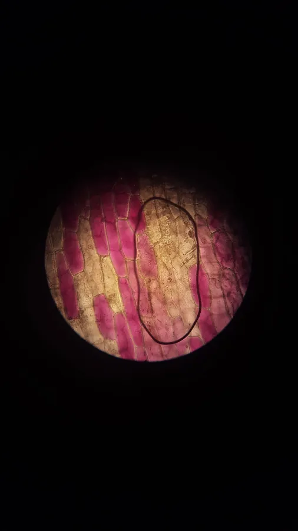

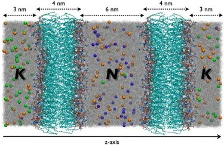
Струм іонів через мембрану підкоряється закону Ома: I = ΔV / R = g · ΔV, де провідність g = 1/R (у сименсах) пропорційна кількості відкритих каналів.
1.3Електрохімічний градієнт і рівняння Нернста
Уявімо посудину з мембраною. Якщо в мембрані є пори для сахарози, вона дифундує, доки концентрації не зрівняються. А якщо внести KCl, а канали пропускають лише K⁺? Калій піде за хімічним градієнтом, хлорид залишиться — лівий відсік зарядиться негативно, правий позитивно, і електричне поле почне тягнути K⁺ назад. Настане рівновага двох сил.
Головне. напрямок і швидкість руху іона визначає електрохімічний градієнт — сума хімічного (концентраційного) градієнта та електричного поля мембрани.
Потенціал реверсії (рівноважний, нернстівський) Ei — потенціал, за якого електрична сила точно врівноважує дифузійну, і результуючий потік іона дорівнює нулю. Іони й далі проходять відкритими каналами в обидва боки, але входжень стільки ж, скільки виходжень. Ei залежить лише від співвідношення концентрацій, заряду іона і температури — і не залежить від кількості відкритих каналів.
Формула (1.3) — для 21 °C. R = 8,314 Дж/(моль·К); T — температура, К; z — заряд іона зі знаком (+1 для K⁺ і Na⁺, +2 для Ca²⁺, −1 для Cl⁻ і NO₃⁻); F = 96 485 Кл/моль.
[Na⁺]in = 14 мМ, [Na⁺]out = 140 мМ → ENa = 61 · lg 10 = +61 мВ. При Vm від −70 до −200 мВ і хімічний, і електричний градієнти женуть Na⁺ всередину — тому клітина обмежує проникність для Na⁺ і викачує його (SOS1 назовні, NHX у вакуолю).
[K⁺]in = 140 мМ, [K⁺]out = 4 мМ → EK = −61 · lg 35 ≈ −94 мВ, близько до потенціалу спокою. Рибосоми та ферменти потребують 100–200 мМ K⁺, і негативний потенціал утримує калій усередині майже рівноважно.
Оберіть іон, змініть концентрації та потенціал мембрани. Стрілки показують хімічну й електричну силу, а висновок — куди піде іон пасивно.
Сумарний струм іона визначають провідність мембрани для нього і електрохімічна рушійна сила (Vm − Ei):
Якщо Vm = Ei, струму немає навіть за повністю відкритих каналів.
1.4Канали, транспортери, помпи
Транспорт поділяють за термодинамікою (пасивний — за електрохімічним градієнтом; активний — проти нього, за рахунок АТФ або градієнта іншого іона) і за механізмом білка:
Наскрізна водна пора, лише два стани — відкритий і закритий. 10⁶–10⁸ іонів/с — у ~10⁵ разів швидше за транспортери. Тільки пасивний транспорт, без насичення.
Сайт зв'язування і конформаційний цикл «почергового доступу» (alternating access). Лише 10¹–10³ молекул/с, кінетика Міхаеліса–Ментен з плато Vmax.
Первинно-активний транспорт: енергія гідролізу АТФ змінює конформацію і спорідненість сайтів, проганяючи іон проти градієнта.
Потік крізь канал зростає лінійно з концентрацією, а транспортер насичується, коли всі молекули переносника зайняті.
За стехіометрією транспортери бувають трьох типів:
Натисніть на схему, щоб зупинити або запустити анімацію.
Активний транспорт на прикладі конформаційних циклів
- Вторинно-активний: H⁺/лактозний симпортерЗовні багато H⁺. Протон зв'язується з Glu транспортера → утворюється високоафінний сайт для лактози → білок повертається в цитозоль, де спорідненість падає: лактоза виходить проти свого градієнта, слідом — H⁺. Жоден субстрат не переноситься без іншого.
- Первинно-активний: Ca²⁺-АТФаза P-типуСтан E₁: високоафінні сайти Ca²⁺ дивляться в цитозоль. Зв'язування Ca²⁺ і АТФ, гідроліз, фосфорилювання аспартату → стан E₂-P: пора відкрита назовні, спорідненість падає, Ca²⁺ виходить проти 10 000-кратного градієнта. Відщеплення Pᵢ повертає E₁.
1.5Селективний фільтр KcsA
Як калієвий канал пропускає K⁺ (радіус ≈ 1,33 Å) майже зі швидкістю вільної дифузії, але блокує менший Na⁺ (≈ 0,95 Å) з селективністю понад 1000 : 1? Відповідь дала кристалічна структура бактеріального каналу KcsA зі Streptomyces lividans (Doyle et al., 1998; Нобелівська премія Р. МакКіннона 2003 р.).
- Консервативний мотив у P-петлі всіх K⁺-каналів — від бактерій і Arabidopsis до людини:
T-V-G-Y-G(або спорідненийGYGD). - «Молекулярна рукавичка»: карбонільні кисні остова TVGYG усіх чотирьох субодиниць дивляться в пору і замінюють іону молекули води.
- Чому не Na⁺: геометрія кисневої «клітки» точно підігнана під дегідратований K⁺. Менший Na⁺ дістає лише 1–2 кисні — втрату гідратної оболонки нічим компенсувати, тож вхід у фільтр невигідний.
Перемкніть іон: K⁺ координується вісьмома карбонільними киснями, Na⁺ «бовтається» в порі.
KcsA Streptomyces (бактерія) … T V G Y G D … KAT1, AKT1 Arabidopsis (рослина) … T V G Y G D … Shaker Drosophila (комаха) … T V G Y G D … Kv1.2 людина … T V G Y G D …

За механізмом «воріт» (gating) канали бувають:
Відкриваються при де- або гіперполяризації; мають заряджений сегмент S4 — сенсор напруги.
Відкриваються ліґандом: глутамат, цАМФ/цГМФ, Ca²⁺.
Відкриваються натягом бішару: тургор, дотик, вітер, гравітація.
1.6Voltage clamp і patch clamp
Струм через мембрану залежить і від провідності g, і від потенціалу Vm — якщо потенціал «плаває», ці ефекти не розділити. Тому вимірюють у режимі фіксації потенціалу.
- Voltage clampЕлектрод вимірює Vm; підсилювач порівнює його з командним Vcmd і миттєво інжектує компенсуючий струм, що утримує Vm = Vcmd. Цей струм дорівнює (з протилежним знаком) сумарному іонному струму мембрани.
- Patch clamp (Е. Неєр, Б. Сакман)Скляна мікропіпетка з кінчиком 0,1–0,2 мкм, заповнена електролітом з Ag/AgCl-електродом; опір у розчині 10–40 МОм. Піпетки витягують на пулері перед дослідом.
- ПротопластиКлітинна стінка не пускає піпетку до плазмалеми, тому її розщеплюють целюлазами й пектиназами в гіперосмотичному середовищі (або виділяють вакуолі для вивчення тонопласта).
- Гігаомний контакт (gigaseal)Легке підсмоктування — і між склом та бішаром виникає контакт з опором 1–10 ГОм. Без нього струм одного каналу (кілька пА) «витік» би в щілину й потонув у шумі.

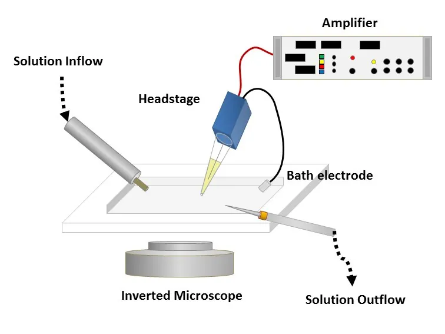

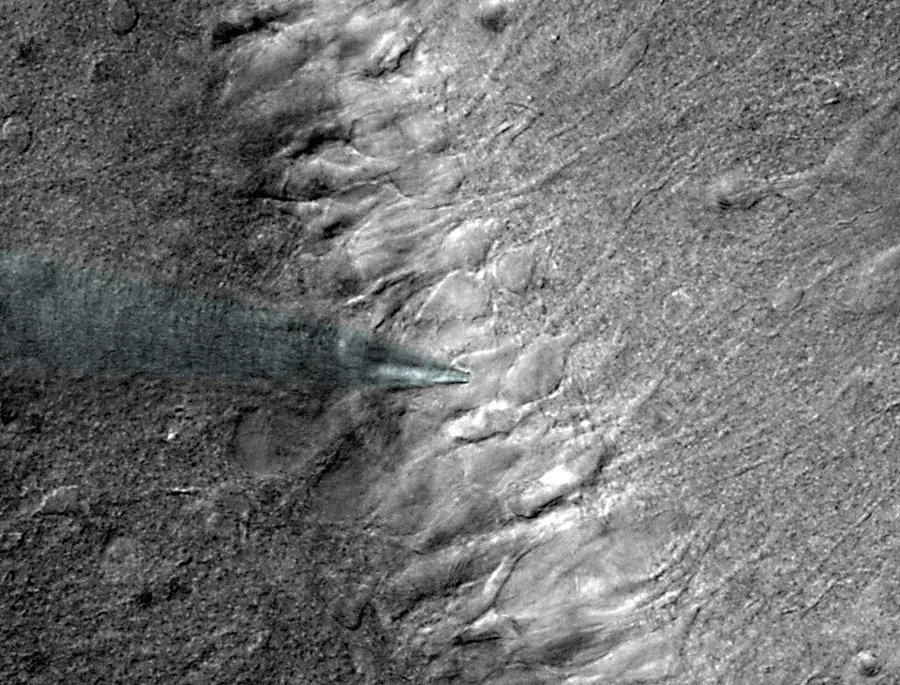

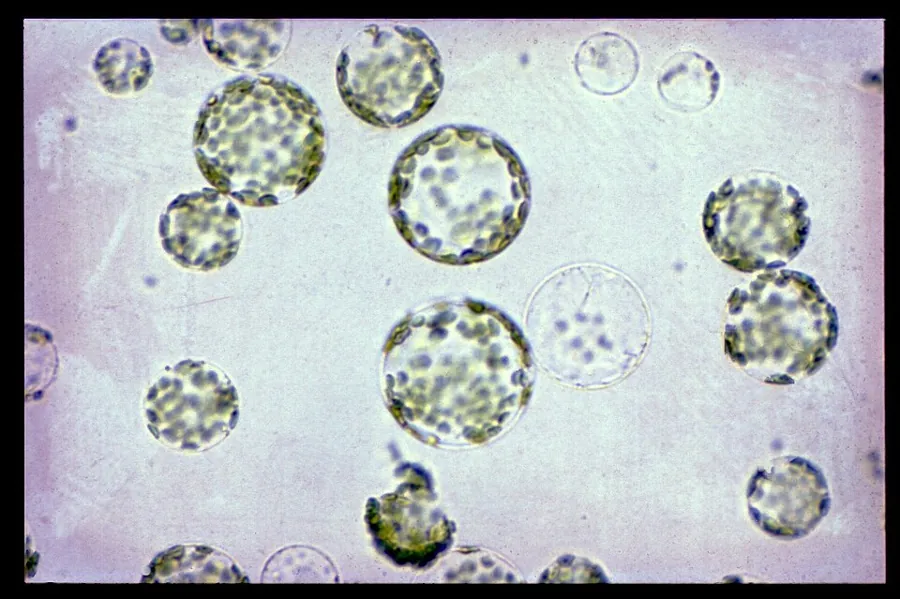

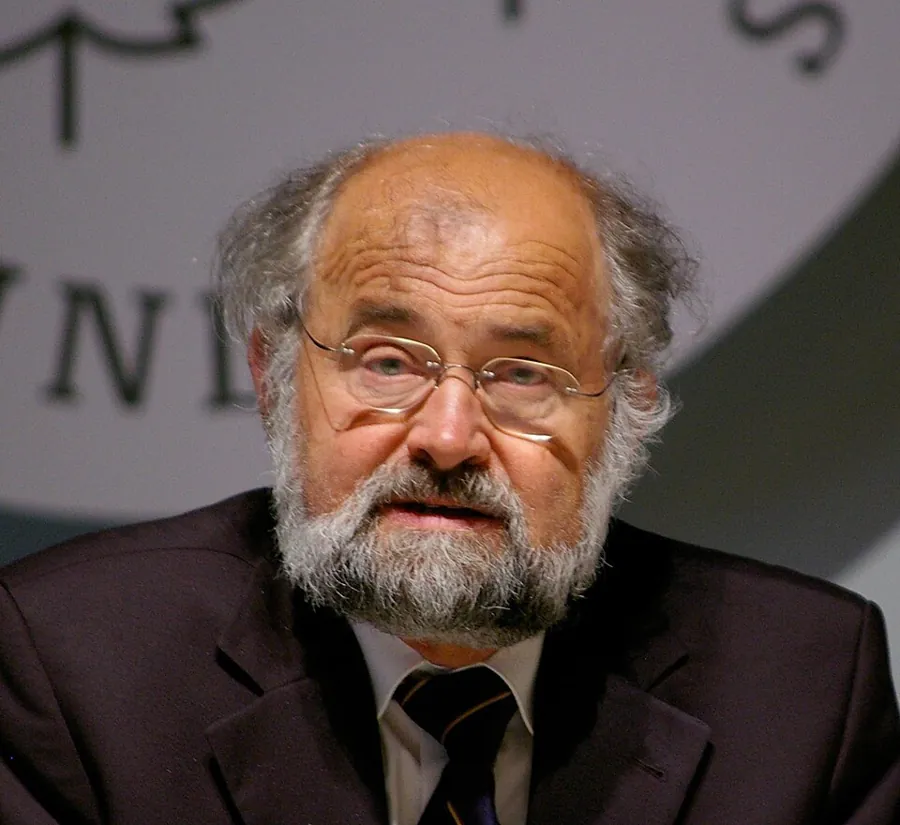
Перемикайте конфігурації: що опиняється під кінчиком піпетки і який бік мембрани дивиться у ванночку.
Ємність мембрани і площа протопласта
Еквівалентна схема: опір піпетки Rs, опір контакту Rseal, опір мембрани Rm і ємність мембрани Cm. Бішар — тонкий діелектрик між двома провідниками, тобто плаский конденсатор ≈ 1 мкФ/см². На сходинку потенціалу спершу тече ємнісний струм Ic = Cm·dV/dt; його інтеграл дає площу протопласта і дозволяє нормувати струм у пА/пФ.
Поодинокі канали, макрострум і I–V криві
- Дискретність: запис одного каналу — прямокутні сходинки між «закрито» і «відкрито»; напіввідкритих станів немає. Кілька каналів у патчі дають кратні сходинки 1i, 2i, 3i (Hedrich & Neher, 1987).
- Popen: кожен канал відкривається випадково, але сума ~300 записів відтворює макроскопічний струм цілої клітини разом з активацією та інактивацією.
- Потенціал-залежність струму ≠ потенціал-залежність воріт. Струм будь-якого відкритого каналу залежить від напруги за законом Ома, і I–V крива — пряма через Erev. Потенціал-залежний канал (як KAT1) має ворота, закриті при деполяризації, і нелінійну «випрямляючу» I–V криву.
- Хвостові струми (tail currents): після повернення потенціалу канали закриваються не миттєво — спадаючий «хвіст» показує кінетику деактивації і дозволяє точно виміряти Erev.
Стохастичні відкривання кількох каналів у патчі та огинаюча 300 записів.
Порівняйте лінійний канал, вхідний (KAT1) і вихідний (GORK) випрямлячі. Змініть [K⁺]out — Erev зсувається; змініть «активатор» — змінюється лише нахил.
Як довести, що струм несе конкретний білок
кДНК каналу в ооцитах Xenopus laevis або штучних бішарах.
Потенціал реверсії має зсуватися зі зміною концентрації іона так, як передбачає рівняння Нернста.
TEA⁺, Ba²⁺, Cs⁺ для K⁺-каналів; Gd³⁺, La³⁺, верапаміл для Ca²⁺-каналів; 9-AC, NPPB для аніонних. Блокатори «тваринних» каналів у рослин можуть діяти неспецифічно — потрібна перевірка нокаут-мутантами.
Потенціал-чутливі барвники, генетично кодовані індикатори та транспорт у везикулах
I–V криві · GEVI · di-4-ANEPPS · везикули ISO/RSO
2.1Як читати I–V криві
Почнемо з практикуму: як читати електрофізіологічні графіки в статтях.
Дивіться на масштабну лінійку: одиниці пА і дискретні сходинки — запис поодиноких каналів; нА (в ооцитах — мкА) і гладкі криві — whole-cell або TEVC.
Обов'язково показують ооцит, ін'єктований водою чи порожнім вектором. Активний K⁺-канал ще й зсуває потенціал спокою ооцита до EK.
Вхідний — струм лише при гіперполяризації (нижче −80…−100 мВ), I < 0. Вихідний — активується деполяризацією, I > 0.
I–V майже лінійна, але нахил різко зростає, коли додати ліганд (наприклад, Ca²⁺ з цитоплазматичного боку).
На записі вказують тиск у піпетці (мм рт. ст.). У дикого типу відкриваються 4–5 каналів, у мутанта msl9;msl10 відповідь зникає.
Головне. якщо [K⁺]out = [K⁺]in, то lg 1 = 0 і EK = 0 мВ. Якщо зовнішній калій зробити набагато вищим за внутрішній, хімічний градієнт жене K⁺ усередину навіть при 0 мВ — щоб зупинити потік, потрібен позитивний потенціал, і Erev зсувається в додатну область. Спробуйте це в моделі I–V вище.
2.2Флуоресценція і мікроскоп
Patch clamp інвазивний: потрібні протопласти, і не видно розподілу потенціалу по живій тканині. Альтернатива — оптичні методи з флуоресцентними зондами.

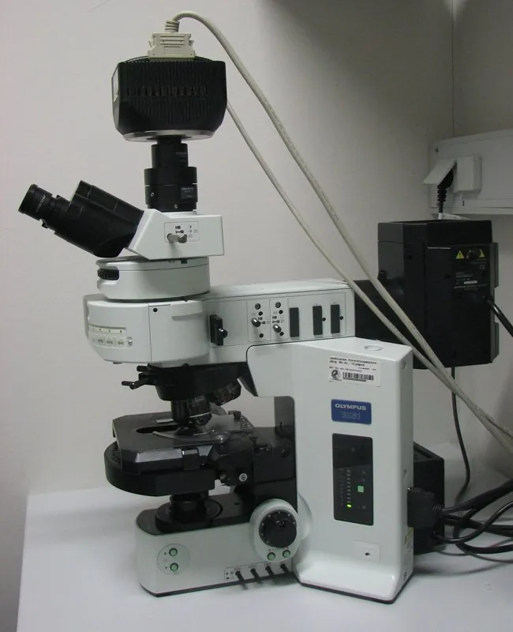

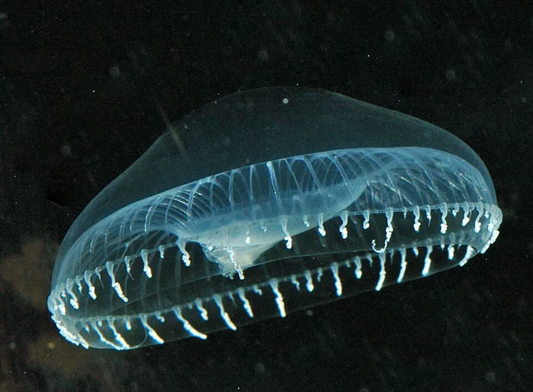

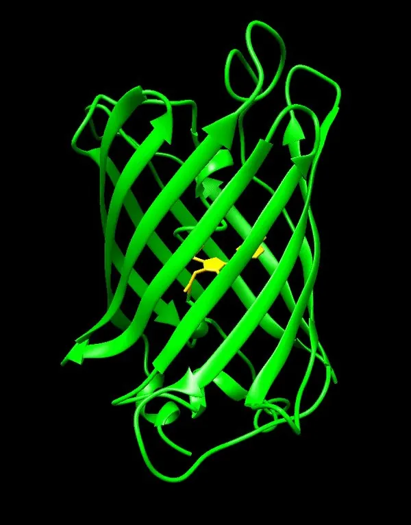
2.3Генетично кодовані індикатори (GEVI)
Після клонування GFP медузи Aequorea victoria (О. Сімомура) і створення палітри EBFP, ECFP, EGFP, EYFP, mCherry (Р. Тсієн) з кінця 1990-х з'явилися три родини генетично кодованих індикаторів потенціалу (GEVI):
Потенціал-чутливий домен S1–S4 каналу або фосфатази VSP + флуоресцентний білок: FlaSh (1997), SPARC, VSFP1/2, ArcLight, ASAP1, червоний FlicR1. Рух S4 змінює яскравість GFP. Оптимальні лінкери знаходять спрямованою еволюцією в E. coli.
PROPS, Arch: у світлозалежних протонних помп «вимкнули» транспорт, але залишили залежність протонування шиффової основи ретиналю — і слабкої флуоресценції — від потенціалу.
GFP на мембрані + ліпофільний аніон дипікриламін (DPA), що перескакує між листками бішару. При деполяризації DPA наближається до GFP (< 5 нм) і гасить флуоресценцію.
Обмеження. оптичні сенсори добре показують відносну динаміку — де і коли мембрана де- чи гіперполяризується, — але абсолютні мілівольти отримати складно (потрібне калібрування). Крім того, GEVI вимагають стабільної трансформації виду рослин.
2.4Швидкі й повільні барвники
Коли трансформація неможлива (пилкові трубки ялини Picea abies чи лілії Lilium longiflorum), використовують синтетичні барвники.
| Тип | Приклади | Механізм | Відгук |
|---|---|---|---|
| Електрохромні (стирилові) | di-4-ANEPPS, di-8-ANEPPS, RH421 | Хромофор у бішарі; поле зсуває спектр (ефект Штарка) — раціометрія | мс |
| PeT («молекулярний дріт») | VoltageFluor VF2.1.Cl | При негативному потенціалі донор гасить флуорофор; деполяризація вимикає перенос електрона — світіння зростає | мс |
| FRET-пари | оксонол + кумарин/ANEPPS | Перерозподіл акцептора в бішарі | мс |
| Повільні (нернстівські) | DiOCn, родаміни, DiBAC₄(3) | Ліпофільні іони розподіляються за рівнянням Нернста | с |
Потенціал-чутливі барвники показують, що різні активні форми кисню діють протилежно: O₂•⁻ і H₂O₂ гіперполяризують мембрану, а OH• деполяризує.
Методична пастка. барвники, створені для тваринних клітин, сорбуються на гідрофобних і пектинових компонентах клітинної стінки й швидко поглинаються ендоцитозом — особливо в пилкових трубках і кореневих волосках.

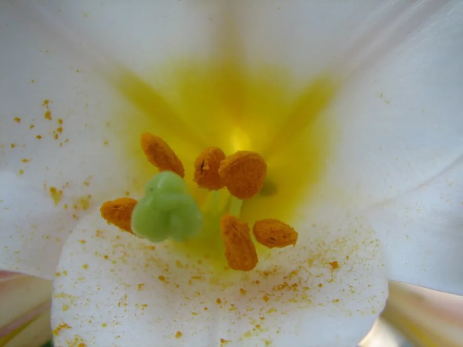

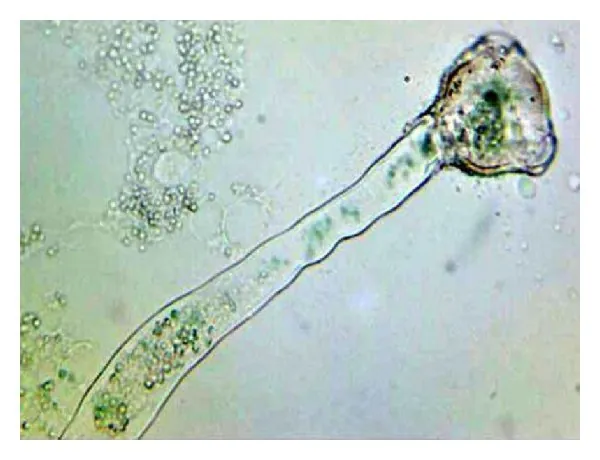
2.5Везикули RSO та ISO
Помпи й транспортери працюють у 10⁴–10⁵ разів повільніше за канали, а частина обмінів електронейтральна — у патчі їхній струм не виміряти. Класичне рішення — суспензія ізольованих везикул плазмалеми чи тонопласта.
Mg-АТФ запускає H⁺-АТФазу (H⁺ всередину везикули), CaCl₂ — Ca²⁺/H⁺-антипортер CAX, ванадат блокує P-АТФазу, NH₄Cl руйнує ΔpH.
Додавайте реагенти в кювету з везикулами та акридиновим оранжевим. Флуоресценція падає, коли везикули закислюються.
- Регуляція кіназою PKS5: у мутанта pks5 ISO-везикули закислюються швидше, ніж у Col-0, а з конститутивно активною кіназою — повільніше. Отже, PKS5 фосфорилює та гальмує H⁺-АТФазу (Fuglsang et al., 2007).
- Ca²⁺/H⁺-антипортер: після закислення додають CaCl₂ — сигнал повертається (залужнення), бо CAX обмінює внутрішні H⁺ на Ca²⁺; швидкість лінійно росте з [Ca²⁺] до ~40 мкМ.
Системи транспорту калію: родина каналів Shaker
AKT1 · KAT1 · GORK · SKOR · CBL–CIPK23
3.1Роль калію: HATS і LATS
Калій — головний неорганічний катіон рослинної клітини: до 10 % сухої маси. Він не входить до ковалентних сполук, але виконує незамінні функції:
Стабілізує конформацію білків і активує понад 60 ферментів; Na⁺ його не замінить через іншу гідратну оболонку.
Компенсує негативні заряди органічних кислот, білків, нуклеїнових кислот у цитоплазмі й флоемі.
Ріст розтягненням коренів, гіпокотилів, пилкових трубок; рухи замикаючих клітин продихів.
У тандемі з H⁺-АТФазою підтримує потенціал спокою та pH цитоплазми.
У цитоплазмі [K⁺] тримається на рівні 100–200 мМ, а в ґрунтовому розчині часто лише 10–200 мкМ — у тисячу разів менше. За концепцією Епштейна корінь поглинає калій двома системами:
| Система | Діапазон [K⁺] ззовні | Механізм | Головний білок |
|---|---|---|---|
| HATS (високоафінна) | < 100 мкМ, особливо < 10 мкМ | вторинно-активний K⁺/H⁺-симпорт — потенціалу вже не вистачає для пасивного входу | HAK5 (родина HAK/KUP/KT) |
| LATS (низькоафінна) | > 0,1–1 мМ | пасивний вхід крізь канали завдяки негативному потенціалу від H⁺-АТФази | AKT1 (родина Shaker) |
Рубідій (Rb⁺) — аналог K⁺ і трасер: у hak5 поглинання зникає в мікромолярному діапазоні, у akt1 — падає при вищих концентраціях.

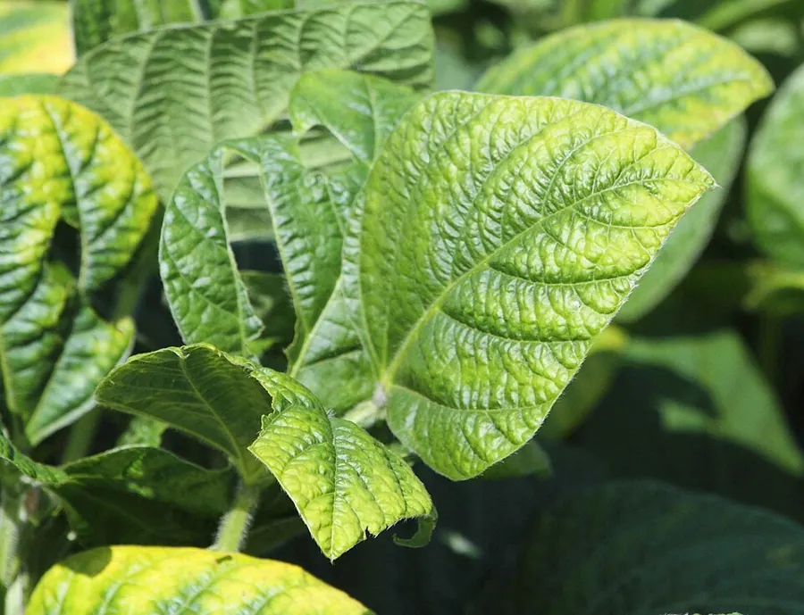

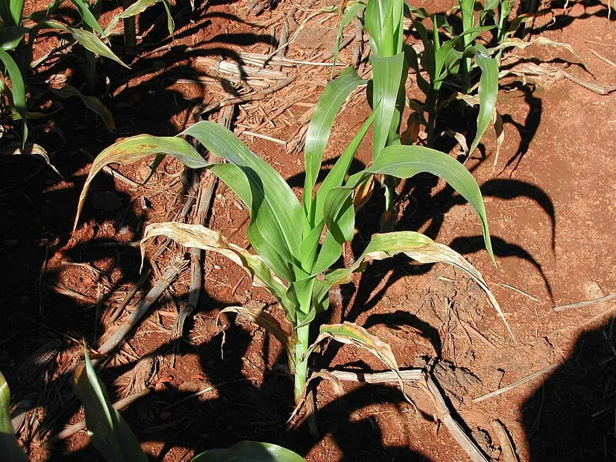
3.2Родини K⁺-транспорту і будова Shaker
У геномі Arabidopsis thaliana близько 71 гена транспорту K⁺ і неселективних катіонних каналів:
AKT1, AKT2/3, AKT5, SPIK (AKT6), KAT1, KAT2, AtKC1, GORK, SKOR — потенціал-залежні.
TPK1–TPK5, KCO3; переважно потенціал-незалежні, на тонопласті та ендомембранах.
CNGC (20 генів) і GLR (20 генів), проникні й для Ca²⁺.
Високоафінні K⁺/H⁺-симпортери.
AtHKT1;1 — Na⁺ або Na⁺/K⁺-транспортер (у злаків і галофітів генів багато).
K⁺/H⁺-антипортери пластид і ендомембран (KEA1–KEA6).
Функціональний канал Shaker — гомо- або гетеротетрамер: чотири α-субодиниці оточують K⁺-селективну пору. Натисніть на частини субодиниці:
3.3П'ять груп каналів Shaker
За філогенією та реакцією на гіпер- чи деполяризацію 9 каналів Shaker поділяють на п'ять груп:
| Група | Канали | Тип | Анкірин | Де і навіщо |
|---|---|---|---|---|
| I | AKT1, AKT5, SPIK (AKT6) | вхідні випрямлячі | так | AKT1 — епідерміс і кора кореня (головний шлях поглинання K⁺), мезофіл; SPIK — пилок і пилкові трубки |
| II | KAT1, KAT2 | вхідні випрямлячі | ні | замикаючі клітини: вхід K⁺ при світловій гіперполяризації відкриває продихи; завантаження флоеми |
| III | AKT2 | слабко випрямляючий, двонаправлений | так | флоема: завантаження й розвантаження K⁺, «калієва батарея» для потенціалу ситоподібних трубок |
| IV | AtKC1 (KAT3) | «мовчазна» регуляторна субодиниця | ні | епідерміс кореня: сама каналу не утворює, але з AKT1 зсуває поріг активації в негативний бік і не дає K⁺ витікати при бідному ґрунті |
| V | GORK, SKOR | вихідні випрямлячі | так | GORK — продихи (вихід K⁺ при закриванні), кореневі волоски; SKOR — стела, секреція K⁺ у ксилему |
Оберіть групу — на схемі рослини залишаться відповідні органи.

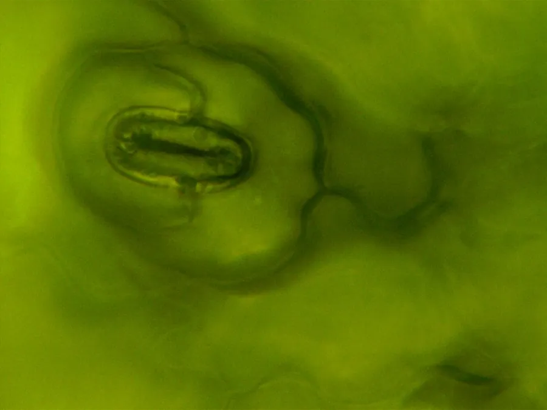

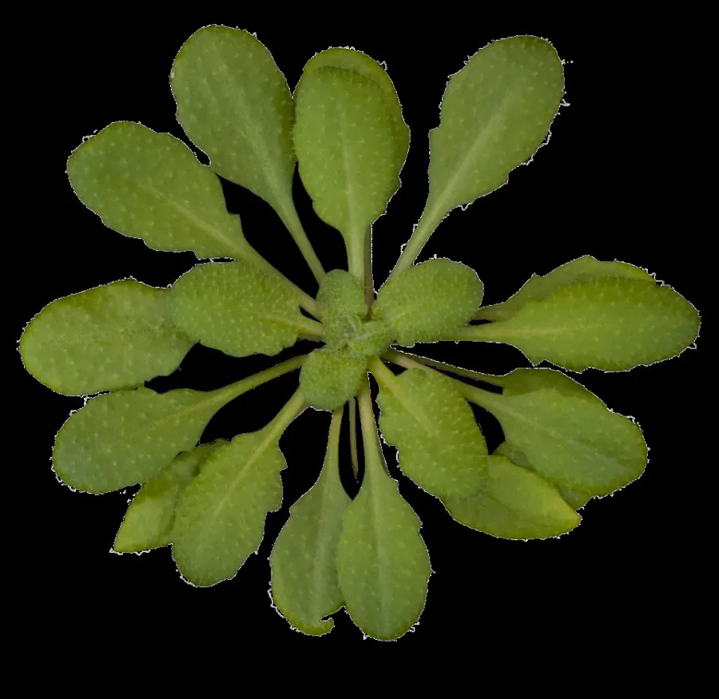
Чому вхідні канали рослин активуються гіперполяризацією
У нейронах K⁺-канали переважно вихідні: вони повертають потенціал до спокою після потенціалу дії. Рослинна ж плазмалема постійно гіперполяризована H⁺-АТФазами до −120…−200 мВ. Якщо зовні 100 мкМ K⁺, а всередині 100 мМ, пасивний вхід можливий лише тоді, коли Vm негативніший за EK. Канал, що відкривався б при −40 мВ, не поглинав би, а випускав калій у ґрунт за тисячократним градієнтом. Тому AKT1 і KAT1 налаштовані відкриватися лише при сильнішій гіперполяризації, а AtKC1 додатково страхує від витоку.
Головне. активатор чи інгібітор каналу змінює нахил I–V кривої (Popen або кількість активних каналів), але не зсуває точку перетину з віссю напруги: Erev залежить лише від концентрацій K⁺ по обидва боки. Перевірте повзунком «активатор» у моделі I–V розділу 1.
3.4Регуляція AKT1 комплексом CBL–CIPK
Окрім потенціалу, канали Shaker тонко регулюються pH (підкислення гальмує групу V, але активує KAT1), поліамінами, білками 14-3-3, Ca²⁺ і фосфорилюванням.
- Низький K⁺ зовні → кальцієвий сигналУ клітинах епідермісу й кори кореня зростає [Ca²⁺]cyt.
- CBL1 / CBL9 → CIPK23Кальцієві сенсори CBL1 і CBL9 (calcineurin B-like) рекрутують до плазмалеми кіназу CIPK23 і активують її.
- CIPK23 → AKT1Кіназа зв'язується з анкіриновим доменом AKT1 і фосфорилює канал. В ооцитах Xenopus сам AKT1 майже не дає струму — струм з'являється лише з CBL1 (або CBL9) + CIPK23 (Xu et al., 2006; Li et al., 2006).
- Сайти Ser26 і Ser338Специфічні для AKT1 серини: на N-кінці та в C-лінкері (їх немає в KAT1 і SKOR). Заміна S→A на обох (S26A/S338A), як і S338A, майже скасовує активацію; S26A суттєво знижує струм.
Порівняйте I–V криві: канал сам, з CBL1+CIPK23 і з мутаціями сайтів фосфорилювання.
AKT2 і CBL4–CIPK6. На відміну від AKT1, комплекс CBL4 (SOS3) – CIPK6 підвищує калієву провідність флоеми не фосфорилюванням воріт, а посиленням доставки каналу AKT2 з ЕР на плазмалему (Held et al., 2011).

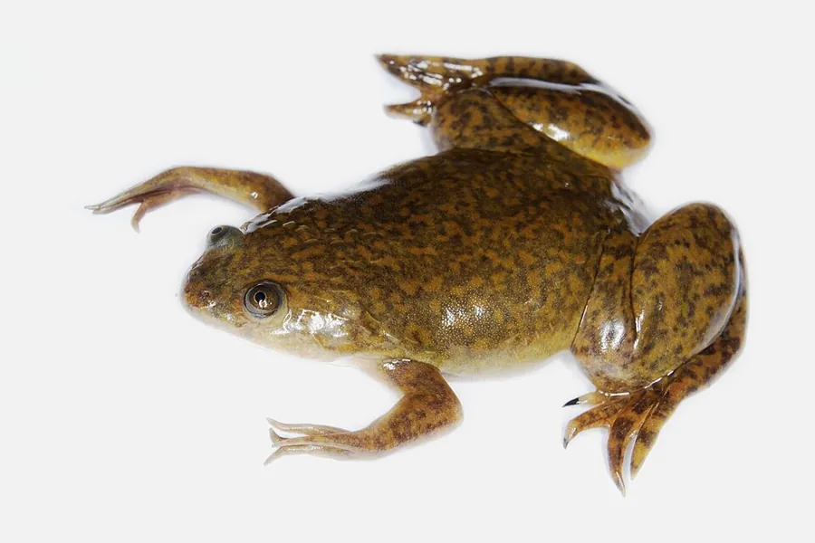
Тандем-порові канали TPK та натрій/калієві транспортери HKT
TPK1 · TPK3 · AtHKT1;1 · OsHKT2 · TsHKT1;2
4.1Розбір статті: NO і вітамін B₆
Суть: оксид азоту (NO) гальмує поглинання K⁺ і ріст коренів на бідному на калій середовищі — через активну форму вітаміну B₆, піридоксаль-5′-фосфат (PLP).
- Більше NO → більше PLPУ мутантів з високим ендогенним NO (nox1/cue1) або після донора NO (нітропрусид натрію, SNP) зростає рівень PLP, а вміст K⁺ падає.
- Без синтезу PLP немає ефектуУ мутанта pdx1.3 (порушений синтез B₆) поглинання K⁺ перестає реагувати на NO.
- PLP пригнічує AKT1 напрямуPatch clamp протопластів кореня і TEVC ооцитів з AKT1 + CBL1 + CIPK23: PLP суттєво зменшує вхідний K⁺-струм.
Методична думка з дискусії. щоб показати, що NO діє опосередковано (через синтез PLP), а не прямим S-нітрозилюванням AKT1, достатньо додати донор NO до ооцитів з AKT1+CBL1+CIPK23 без PLP: у тваринній клітині немає рослинного шляху синтезу PLP, і пригнічення не буде.
4.2Тандем-порові канали TPK
Друга родина K⁺-каналів — тандем-порові канали (TPK, раніше KCO).
- Еволюційний парадокс. Канали прокаріотів були потенціал-залежними; у вищих рослин TPK стали практично потенціал-незалежними — вони відкриваються при будь-якому потенціалі, якщо Ca²⁺ зв'язався з EF-hand і приєднався 14-3-3.
- AtTPK1 (тонопласт). Поодинокі пА-струми слабко залежать від напруги, але потребують мікромолярного цитозольного Ca²⁺. У замикаючих клітинах TPK1 швидко випускає K⁺ з вакуолі при АБК-індукованому закриванні продихів; у tpk1 закривання уповільнене (Gobert et al., 2007).
- AtTPK3 (тилакоїди). Регулює фотосинтез (Carraretto et al., 2013): виводить K⁺ із люмена в строму, розряджаючи електричну складову ΔΨ і перетворюючи протонно-рушійну силу на ΔpH — потрібний для синтезу АТФ і нефотохімічного гасіння (NPQ).
Порівняйте розподіл PMF між ΔΨ і ΔpH на яскравому світлі та після переходу в тінь у дикого типу й мутантів.
4.3Транспортери HKT: клас I і II
Родина HKT (High-affinity K⁺ Transporters) споріднена з бактеріальними TrkH/KtrB і грибними Trk. Один білок — це чотири повтори M1–P–M2 (8 трансмембранних спіралей, 4 пори PA–PD), що згортаються навколо центральної пори.
AtHKT1;1, OsHKT1;5: у порі PA серин (S-G-G-G). Високоселективні до Na⁺, K⁺ не переносять.
Лише в однодольних: OsHKT2;1, OsHKT2;2, TaHKT2;1. У PA гліцин (G-G-G-G) — переносять Na⁺ і K⁺.
Змінюйте зовнішні K⁺ і Na⁺: у AtHKT1;1 Erev реагує лише на натрій. Заміна N211D робить транспортер проникним для K⁺.
Парадокс мутанта hkt1 (sas2)
Здавалося б: якщо HKT1;1 впускає токсичний Na⁺, мутант має бути стійкішим. Насправді на 50 мМ NaCl мутант hkt1 (sodium overaccumulation in shoots 2, Berthomieu et al., 2003) гине від хлорозу швидше за дикий тип.
Рис. У рисі OsHKT2;1 при дефіциті K⁺ поглинає Na⁺ як «замінник осмоліту», майже не проводячи K⁺, а OsHKT2;2 солестійкого сорту Pokkali в культурі клітин тютюну BY-2 поглинає Rb⁺/K⁺ лише в присутності Na⁺ — класичний Na⁺/K⁺-симпортер (Horie et al., 2001).

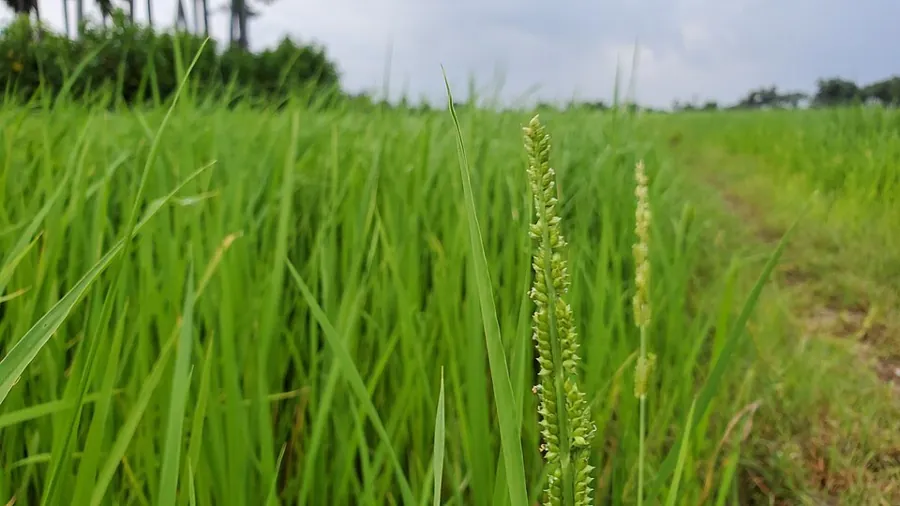

4.4Галофіт Thellungiella: заміна N→D
Родич Arabidopsis — галофіт Thellungiella salsuginea (Eutrema salsugineum) — витримує 300–500 мМ NaCl (Ali et al., 2012; Ali et al., 2016).
- Дуплікація генаГен HKT1 тандемно подвоївся, і паралог TsHKT1;2 зберігає поглинання K⁺ навіть при надлишку Na⁺.
- Одна амінокислотаУ порі PB, де в глікофітів (AtHKT1;1) стоїть незаряджений аспарагін N211, у TsHKT1;2 — негативний аспартат D207. Це відновлює канонічний «калієвий» мотив, як аспартат у KcsA.
- Перевірка в ArabidopsisМутант hkt1-1, трансформований TsHKT1;2 або власним AtHKT1;1-N211D (заміна в позиції 242 ефекту не мала), стає солестійким: більше K⁺, менше Na⁺.
- Перевірка в ооцитахN211D різко зменшує вхідний Na⁺-струм і перетворює Na⁺-уніпортер на транспортер із вираженою провідністю для K⁺ — спробуйте в моделі вище.

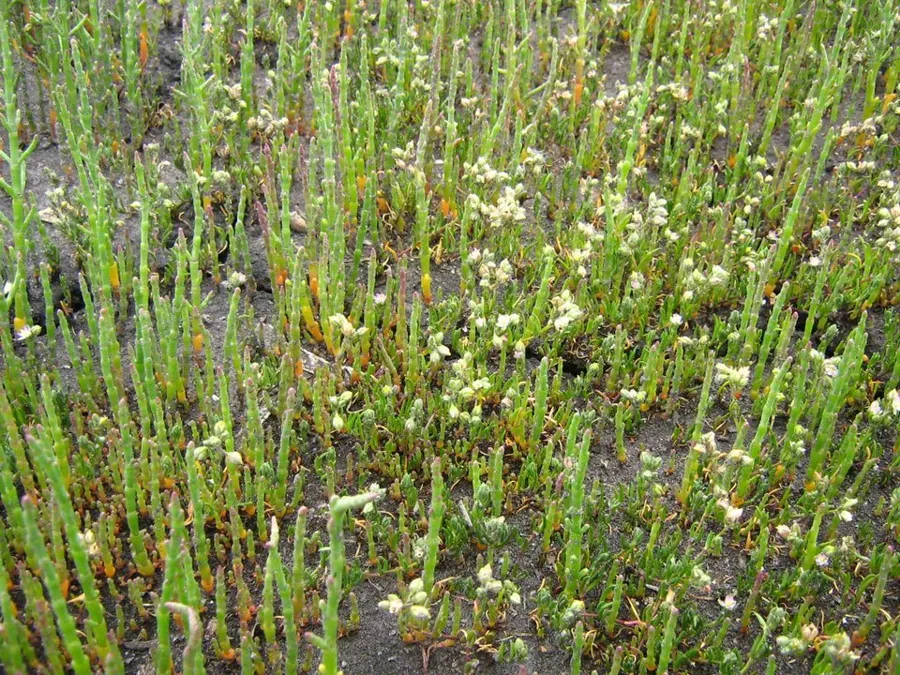
Транспортери HAK/KUP/KT, хлоропластні антипортери KEA та шлях SOS
HAK5 · KUP4/9 · KEA1–3 · SOS1/2 · фосфатидна кислота
5.1Родина KT/HAK/KUP
Родина KT/HAK/KUP відсутня у тварин, але є в бактерій (KUP), грибів (HAK) і всіх рослин (13 генів в Arabidopsis). Це великі білки з 10–14 трансмембранними доменами, що працюють як K⁺/H⁺-симпортери — саме вони поглинають калій при < 10 мкМ, коли канал AKT1 уже безсилий.
Як вмикається HAK5 при калієвому голодуванні
- ГіперполяризаціяПри падінні K⁺ нижче 10–20 мкМ плазмалема епідермісу кореня миттєво гіперполяризується.
- RBOH → АФКГіперполяризація активує НАДФН-оксидази RBOHD/RBOHC, що генерують H₂O₂.
- Ca²⁺ → RAP2.11 → ген HAK5АФК відкривають Ca²⁺-канали; кальцієва сигнатура індукує транскрипційний фактор RAP2.11, який сідає на промотор HAK5.
- CBL–CIPK23 → білок HAK5Сенсори CBL1, CBL8, CBL9, CBL10 активують CIPK23, яка фосфорилює N-кінець HAK5 і переводить його у високоактивний стан (Ragel et al., 2015).
Несподівані функції білків KUP
Мутант trh1 має крихітні волоски й порушений гравітропізм, і високий K⁺ цього не виправляє. TRH1 сприяє виведенню ауксину з клітин кореневого чохлика; NPA імітує фенотип (Rigas et al., 2001; Vicente-Agullo et al., 2004).
Точкова мутація зменшує довжину клітин гіпокотиля через слабше тургорне розтягнення.
На мембрані ЕР клітин покоячого центру. При дефіциті K⁺ виводить K⁺ і IAA⁻ з люмена ЕР у цитозоль, підтримуючи ауксин (DR5::GFP) і поділ; у kup9 ріст кореня зупиняється (Zhang et al., 2020).
У цитоплазматичному N-кінці — каталітичний центр, що синтезує цАМФ; без нього KUP5 не рятує K⁺-дефіцитні дріжджі (Al-Younis et al., 2018).

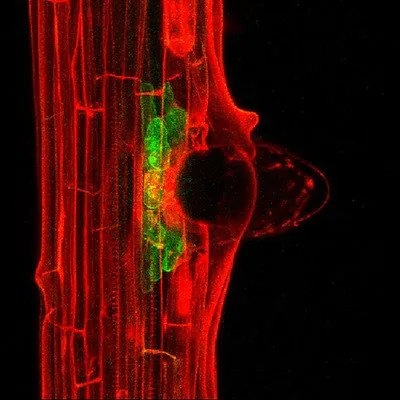

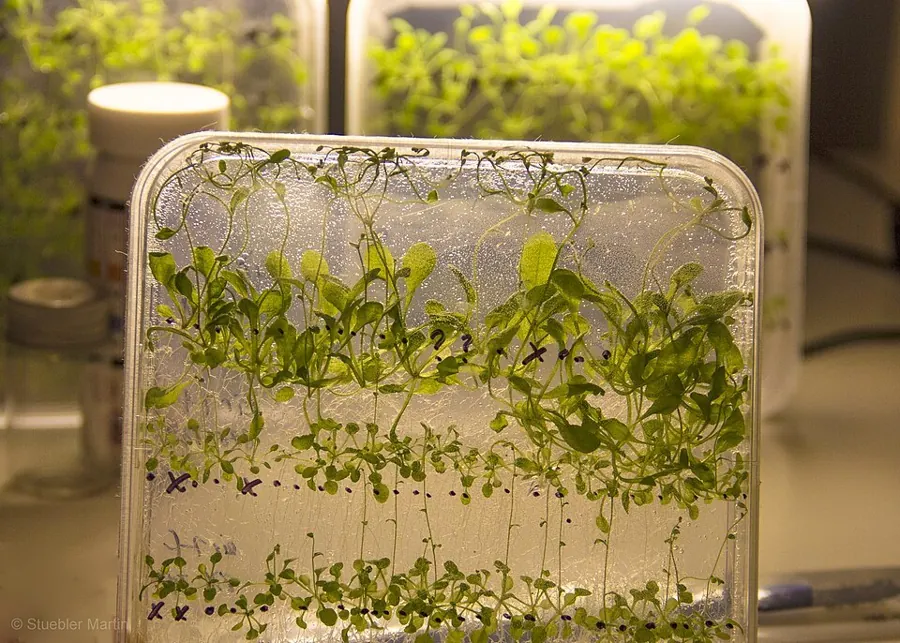
5.2Хлоропластні антипортери KEA
У хлоропластах Arabidopsis працюють три K⁺/H⁺-антипортери родини KEA (Kunz et al., 2014):
Великий N-кінцевий домен, переважно на полюсах пластид, що діляться. Виводять K⁺ зі строми в обмін на H⁺: регулюють об'єм пластид, pH строми, біогенез тилакоїдів. Мутант kea1;kea2: набряклі хлоропласти, бліді листки, карликовість (частково рятується NaCl).
Антагоніст TPK3: при переході з яскравого світла в тінь закачує K⁺ у люмен в обмін на вихід H⁺ у строму. Швидко розсіює ΔpH, вимикає NPQ і підвищує квантову ефективність у тіні (видно з pH-сенсором pHluorin).
5.3Каскад дефіциту калію
Підсумкова часова схема подій у клітині кореня після різкого падіння K⁺ у ґрунті:
- секундиГіперполяризація плазмалемиEK стає значно негативнішим
- хвилиниRBOHD → H₂O₂позаклітинні та цитоплазматичні АФК
- хв — десятки хвПідйом [Ca²⁺]cytАФК і гіперполяризація відкривають Ca²⁺-канали
- посттрансляційноCBL1/9–CIPK23активує AKT1 (з AtKC1 проти витоку) і HAK5
- транскрипціяRAP2.11 → HAK5при < 10 мкМ увесь потік K⁺ бере на себе HAK5
5.4Семінар: фосфатидна кислота і SOS2
Класичний шлях SOS. При засоленні зростає цитозольний Ca²⁺ → сенсор SOS3 (CBL4) → кіназа SOS2 (CIPK24) переходить до плазмалеми й фосфорилює Na⁺/H⁺-антипортер SOS1, який викачує Na⁺. Питання статті: як фосфатидна кислота (PA), яку при сольовому стресі швидко синтезують фосфоліпази D (PLDα1, PLDδ), регулює SOS2 і баланс Na⁺/K⁺?
Ліпіди на нітроцелюлозі + His-SOS2: SOS2 дозозалежно зв'язує лише PA (16:0–18:1, 18:0–18:1, 16:0–16:0), не PC, PE, PI, PS чи PG. Контроль His-RBOHD — не зв'язує.
Ліпосоми з PC ± PA + SOS2 → ультрацентрифугування: SOS2 в осаді лише з PA.
Мічений SOS2 у капілярах з ІЧ-градієнтом температури: зв'язування PA змінює рухливість — крива насичення і Kd.
- Без NaCl мутанти pldα1;pldδ, sos2-2 і CRISPR-лінії не відрізняються від Col-0: каскад PA–SOS2 — суто адаптивна відповідь, а не «домашнє господарство» клітини.
- При 75–100 мМ NaCl ріст коренів гальмується, ефлюкс Na⁺ падає, вихід K⁺ зростає, Na⁺/K⁺ у тканинах — у 3–3,5 раза вище. Неадитивність подвійних мутантів доводить: PLD/PA і SOS2 — в одному шляху.
- Сайт зв'язування. PA заряджена негативно, тож перевірили лізини й аргініни кіназного домену (24, 35, 38, 57…). Заміна K57G повністю скасовує зв'язування з PA.
- Фракціонування мембран. Маркери: цитозольна PEPC і мембранний GHR1. При засоленні SOS2 дикого типу накопичується на плазмалемі, а SOS2K57G (або SOS2 у pldα1;pldδ) — ні, і солестійкість не відновлюється. Крім SOS1, PA-активна SOS2 підтримує роботу AKT1 і надходження K⁺.
Транспорт кальцію та кальцієва сигналізація
CNGC14 · GLR3.3/3.6 · TPC1 · RBOHD · YC3.6
6.1Компартменти і кальцієві сигнатури
Кальцій у рослині виконує дві ролі: структурну (зшиває пектини клітинної стінки, стабілізує мембрани) і сигнальну — універсальний вторинний месенджер, що регулює канали, кінази, екзоцитоз і цитоскелет.
Ca²⁺ легко осаджується з фосфатом — основою енергетики клітини (АТФ). Тому вільний Ca²⁺ у цитозолі тримається на рівні ~100 нМ, а в депо — на 4–5 порядків вище:
Головне. 10 000-кратна різниця концентрацій, негативний потенціал (−120…−180 мВ) і заряд +2 означають, що електрохімічний градієнт Ca²⁺ завжди спрямований у цитозоль — з апопласту, вакуолі, ЕР. Досить на мить відкрити кальцієві канали, і Ca²⁺ хлине всередину.
Кальцієва сигнатура
Ультрафіолет, тепло і холод, посуха, засолення, важкі метали, дотик, поранення, H₂O₂, ауксин, АБК, еліситори патогенів — майже все підвищує [Ca²⁺]cyt. Клітина розрізняє стимули за сигнатурою: амплітуда, тривалість, частота осциляцій, лаг-фаза, локалізація. Її розшифровують декодери — кальмодуліни (CaM), CML, кінази CDPK/CPK, комплекси CBL–CIPK.
Схематичні сигнатури за даними літератури. Зверніть увагу: форму піку визначає не лише вхід, а й швидке видалення Ca²⁺.
Для чіткої сигнатури видалення Ca²⁺ проти градієнта не менш важливе, ніж вхід: високоафінні Ca²⁺-АТФази P-типу (ACA — автоінгібовані кальмодулін-регульовані, ECA — типу ЕР), низькоафінні високоємні Ca²⁺/H⁺-антипортери CAX, буферні білки й ліпіди.
6.2Кальцієві канали рослин
У тварин збудливі клітини використовують потенціал-залежні Ca²⁺-селективні канали CaV. Після секвенування геному Arabidopsis виявилося: у наземних рослин гомологів CaV немає зовсім. Кальцієву провідність забезпечують неселективні або помірно селективні катіонні канали.
Відкриваються при негативних потенціалах; пов'язані з CNGC та аннексинами. Ріст кореневих волосків і пилкових трубок, закривання продихів.
Лінійна I–V у широкому діапазоні; базове живлення Ca²⁺ і сигнальні потоки (GLR, частина CNGC).
Активуються при стресовій деполяризації; довго лишалися неідентифікованими (частково механочутливі канали, TPC1).
6.3CNGC, сенсор YC3.6 і гравітропізм
Субодиниця CNGC має 6 трансмембранних сегментів і P-петлю між S5 і S6 — топологія як у Shaker, але пора неселективна: Ca²⁺, K⁺, Na⁺. У C-кінці — CNBD (цАМФ або цГМФ відкривають канал) і IQ-домен / CaMBD для кальмодуліну, що дає кальцій-залежний зворотний зв'язок.
Як «бачать» Ca²⁺: FRET-сенсор Yellow Cameleon 3.6
Збуджуємо CFP (≈ 435 нм). Без Ca²⁺ світиться блакитним (480 нм); з Ca²⁺ кальмодулін обгортає M13, стягує CFP і YFP — енергія переходить на YFP (535 нм). Відношення YFP/CFP не залежить від товщини препарату.
Методичне застереження. білок на основі кальмодуліну під сильним промотором (35S) у великій кількості сам зв'язує вільний Ca²⁺ і штучно збільшує буферну ємність цитозолю — реакції клітини спотворюються. Відбирають лінії з мінімально достатньою експресією й перевіряють, що фенотип не відрізняється від дикого типу.
CNGC14: ауксин, Ca²⁺ і гравітропізм (Shih et al., 2015)
- Секунди після ауксинуЗадовго до змін транскрипції: стрімкий підйом Ca²⁺ (YC3.6) і залужнення поверхні кореня (гальмується H⁺-АТФаза).
- Два незалежні алеліcngc14-1 і cngc14-2: при Т-ДНК мутагенезі можливі фонові інсерції, тож лише однаковий фенотип двох алелей доводить роль саме цього гена.
- СпецифічністьУ мутантів зникає і Ca²⁺-пік, і залужнення на ауксин, а відповідь на позаклітинний АТФ збережена.
- ГравітропізмПоворот проростка на 90°: ауксин на нижньому боці → через 5 хв Ca²⁺ і pH ↑ → клітини нижнього боку гальмують ріст → корінь гнеться вниз. У cngc14 асиметричного сигналу немає, вигин затриманий, хоча амілопласти-статоліти нормальні.

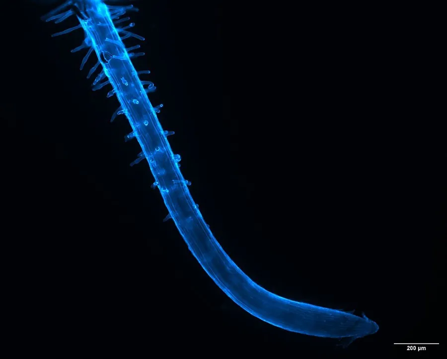

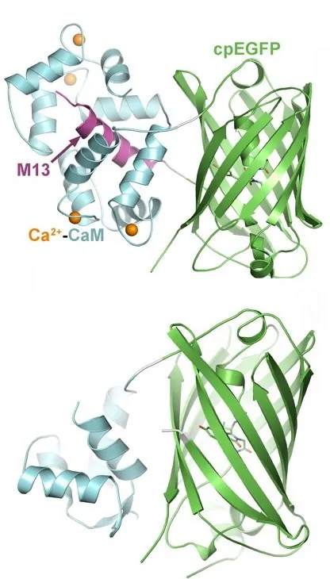
6.4Канали GLR: мох і поранення
GLR (20 генів в Arabidopsis) — гомологи іонотропних глутаматних рецепторів синапсів хребетних (AMPA/каїнатних, NMDA). Субодиниця: позаклітинний N-кінцевий домен, ліганд-зв'язуючий домен (LBD) для глутамату, гліцину, серину, цистеїну, три трансмембранні M1–M3 і P-петля. Тетрамер з високою проникністю для Ca²⁺.
У квіткових 20 генів GLR дублюють один одного, тож автори взяли мох Physcomitrium patens, де лише 2 гени (PpGLR1, PpGLR2).
- Patch clamp протопластів протонеми й експресія в клітинах COS-7: PpGLR1 — Ca²⁺-проникний канал плазмалеми, струм зростає з Ca²⁺ і блокується DNQX/CNQX.
- У ppglr1;ppglr2 дводжгутикові сперматозоїди пливуть з нормальною швидкістю, але не знаходять вхід в архегоній і не індукують BELL1, потрібний для розвитку зиготи.

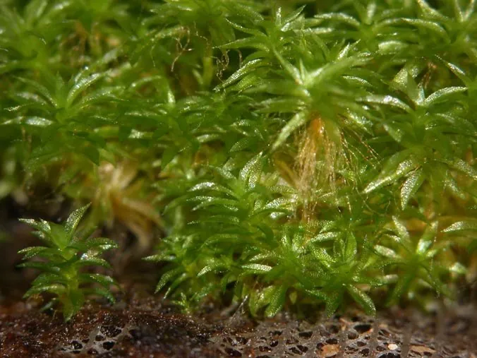
Гусінь кусає листок №1 — і за 40–120 с у віддаленому листку №6 спалахує хвиля Ca²⁺, що запускає синтез жасмонатів.
- Візуалізація: біолюмінесценція екворину (апоекворин + целентеразин, у повній темряві) і флуоресцентний GCaMP3 — видно, як хвиля йде провідними пучками.
- Механізм: зруйновані клітини вивільняють L-глутамат в апопласт; крапля 100 мМ глутамату на кінчик листка відтворює хвилю. У glr3.3;glr3.6 (GLR3.3 — флоема, GLR3.6 — ксилемна паренхіма) системна хвиля і електричний сигнал зникають.

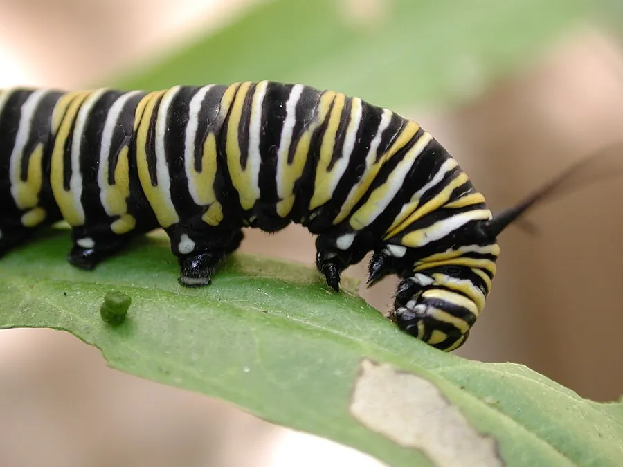
6.5TPC1 і системні хвилі
TPC1 — єдиний ген в Arabidopsis, відповідає за класичний повільний вакуолярний (SV) струм (Peiter et al., 2005). Функціональний канал — гомодимер; кожен мономер — два Shaker-подібні 6-TM домени (S1–S12, пори P1 і P2) з власними сенсорами напруги, а між ними — два мотиви EF-hand. Канал проводить K⁺, Na⁺, Ca²⁺; відкривається, коли цитозольний Ca²⁺ сідає на EF-hand, а високий вакуолярний Ca²⁺ його гальмує.
Кінчик кореня в NaCl → за ~3 хв хвиля Ca²⁺ (YC3.6) досягає листків зі швидкістю ~400 мкм/с. Дифузія Ca²⁺ на таку відстань неможлива — працює естафета: Ca²⁺-індуковане вивільнення Ca²⁺ разом з хвилею АФК.
- Аскорбат, інгібітор НАДФН-оксидази DPI, нокаути tpc1 і rbohd різко гальмують хвилю.
- Апопластний зонд OxyBURST-BSA (пришитий до альбуміну, щоб не проникав у клітини) показав хвилю АФК уже через 30 с — у tpc1 її немає.
- Вхід Ca²⁺Первинний Ca²⁺ через канали плазмалеми активує EF-hand і кінази.
- RBOHD → H₂O₂НАДФН-оксидаза викидає супероксид / H₂O₂ в апопласт сусідньої клітини.
- АФК → Ca²⁺-канали сусідаАФК-чутливі канали сусідньої клітини впускають Ca²⁺.
- TPC1 підсилюєCa²⁺ сідає на EF-hand TPC1 — масований викид з вакуолі; естафета йде далі до пагона.
Кожен прямокутник — клітина на шляху сигналу. Колір — рівень цитозольного Ca²⁺.
Механочутливі канали та кальцій-залежний екзоцитоз у пилку
MSL · MCA · OSCA · PIEZO · CNGC18
7.1Навіщо рослині механорецепція
Найвідоміші швидкі механореакції — венерина мухоловка (Dionaea muscipula) і мімоза сором'язлива (Mimosa pudica): потенціали дії й скидання тургору в моторних клітинах. Але механочутливість — властивість кожної клітини рослини:

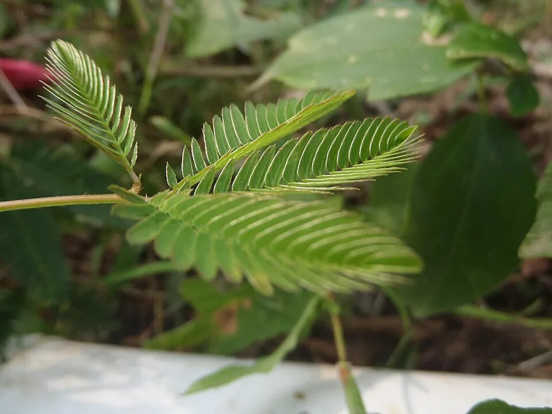

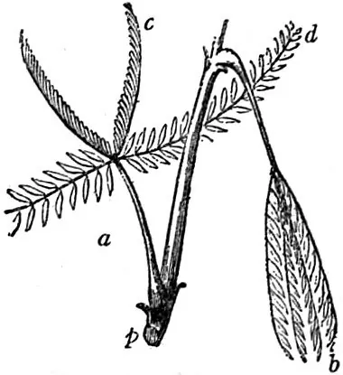

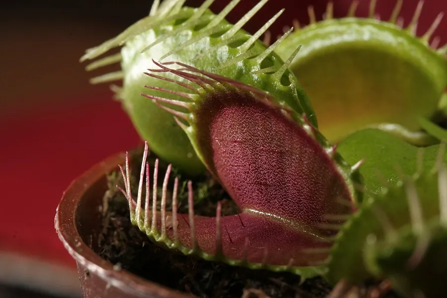

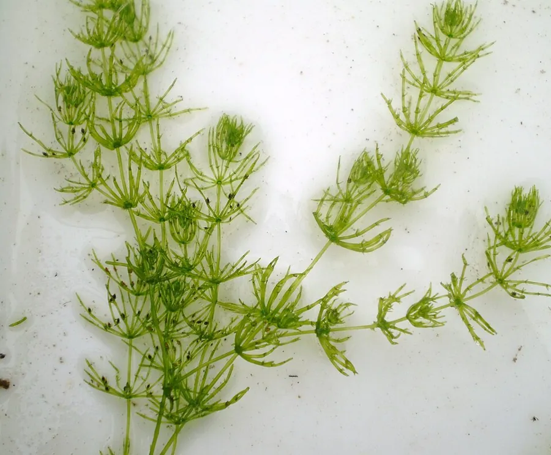
Амілопласти-статоліти колумели осідають і тиснуть на мембрани та актин, перерозподіляючи PIN-транспортери ауксину (у харових — барієві статоліти ризоїдів). Натрапивши на скло, корінь тимчасово «вимикає» гравітропізм, щоб обійти перешкоду.
Вітер чи щоденне погладжування розетки Arabidopsis гальмують видовження стебла — рослина стає компактною і міцною.
Кортикальні мікротрубочки шикуються вздовж ліній механічного напруження і скеровують целюлозу (Hamant et al., 2008; перевірено лазерною абляцією).
Гіпо- чи гіперосмотичний шок миттєво змінює об'єм клітини й натяг мембран.

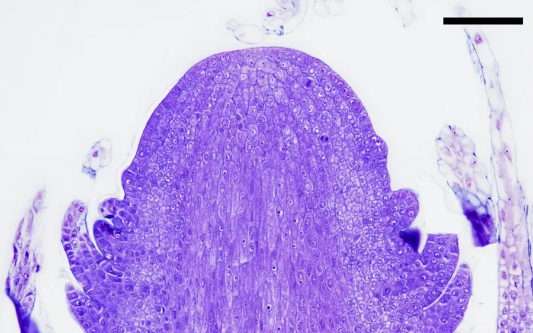
7.2MSL, MCA, OSCA, PIEZO
| Родина | Гени (Arabidopsis) | Будова | Що відомо |
|---|---|---|---|
| MSL (MscS-like) | 10: MSL1–10 | гомо/гетерогептамери, 5–6 TM | MSL1 — мітохондрії; MSL2/3 — пластиди (захист від розриву, поділ); MSL4–10 — плазмалема (MSL9/10 — корінь, MSL8 — пилок). Висока провідність, переважно аніони (Cl⁻, NO₃⁻) — «осмотичний клапан». |
| MCA (Mid1-complementing) | 2: MCA1, MCA2 | 1 TM + EF-hand + coiled-coil + PLAC8; тетрамер | Лише в наземних рослин; відкриті за комплементацією дріжджового mid1. Корені mca1;mca2 не пробивають щільний агар і гинуть при нестачі Ca²⁺. |
| OSCA | 15 | 9–11 TM, димер; тваринні гомологи TMEM63 — теж механочутливі | Осмосенсор OSCA1 знайдено скринінгом з екворином; OSCA1.3 — імунне закривання продихів. |
| PIEZO | 1: AtPIEZO1 | «пропелер», 38 TM на мономер, тример | Кінчик кореня (колумела) і судини; без нього корінь не проникає крізь твердий субстрат; на тонопласті — морфологія вакуолей, імунітет до вірусів. |
Ключові експерименти
П'ятикратний мутант msl4;5;6;9;10 майже втрачає механочутливий струм, але росте нормально. Натомість надекспресія MSL10 або дефосфомімік MSL10-7A викликає H₂O₂, гени стресу (ZAT10) і загибель клітин; фосфомімік 7D — ні (Veley et al., 2014).
N-кінцевий фрагмент MCA1 (173 а.к.), синтезований у безклітинній системі, вбудували в ліпосоми без цитоскелета і стінки: Popen зростає пропорційно тиску до 100 мм рт. ст. — канал відкривається натягом ліпідів (Nakano et al., 2011).
Мутагенізовані проростки + сорбітол у темряві → спалах екворину. Калібрування: наприкінці клітини пермеабілізують з надлишком CaCl₂ і вимірюють залишок Lmax. У osca1 пік удвічі менший, продихи й ріст коренів погано реагують на осмотичний стрес (Yuan et al., 2014).
flg22 → FLS2–BAK1 → кіназа BIK1 фосфорилює Ser54 OSCA1.3 → вхід Ca²⁺ у замикаючі клітини → продих закривається перед патогеном; АБК-закривання в osca1.3 нормальне (Thor et al., 2020).
Ортолог нобелівських PIEZO (А. Патапутян, 2021). PIEZO::GUS — кінчик кореня; у piezo-1 немає Ca²⁺-відповіді на щільний бар'єр (Mousavi et al., 2021).
7.3Семінар: проростання пилку
Питання: як симетричне гідратоване зерно обирає одну точку, де стінка розм'якне, випнеться і з'явиться пилкова трубка? Стежили одночасно за Ca²⁺ (GCaMP6) і секреторними везикулами з форміном AtFH5 (mRFP/GFP).
Артефакт конфокальної мікроскопії. якщо зерно під час зйомки нахиляється відносно оптичного зрізу, змінюється яскравість без реальної зміни Ca²⁺. Тому зерна фіксували в низькоплавкій агарозі під сталим кутом.
- Звідки Ca²⁺? GdCl₃ (блокатор каналів) або EGTA (не проникає в клітину) знижують амплітуду піків, подовжують інтервали і блокують проростання, а базовий рівень не змінюється; іонофор A23187 піки збільшує. Мутант cngc18 — точна фенокопія: джерело спалахів — зовнішній Ca²⁺ через CNGC18.
- Везикули і Ca²⁺: везикули з FH5 2–3 рази обходять периферію зерна, потім зупиняються в майбутній точці проростання. Після кожного спалаху Ca²⁺ сигнал FH5 на плазмалемі зростає сходинками — кожен імпульс запускає хвилю екзоцитозу (позитивний зворотний зв'язок).
- Актин: латрункулін B, цитохалазин D або мутація fh5 розсіюють везикули — фокусованих спалахів немає. (Лекторка зауважує: у кореневих волосках актин доставляє везикули, а вісь росту задають мікротрубочки й градієнт Ca²⁺.)
- Пектини: ТЕМ і пропідій йодид показали потовщений шар секретованих пектинів на фронті випинання.

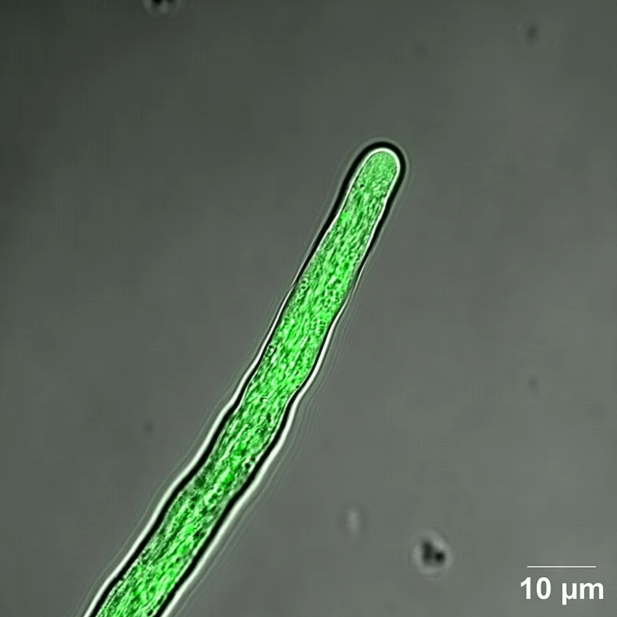

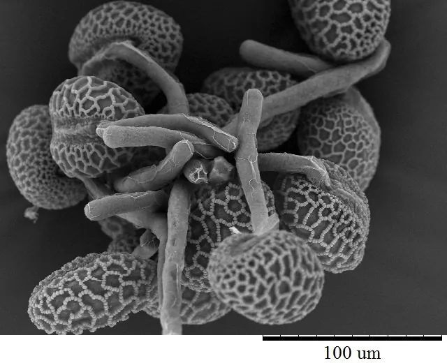

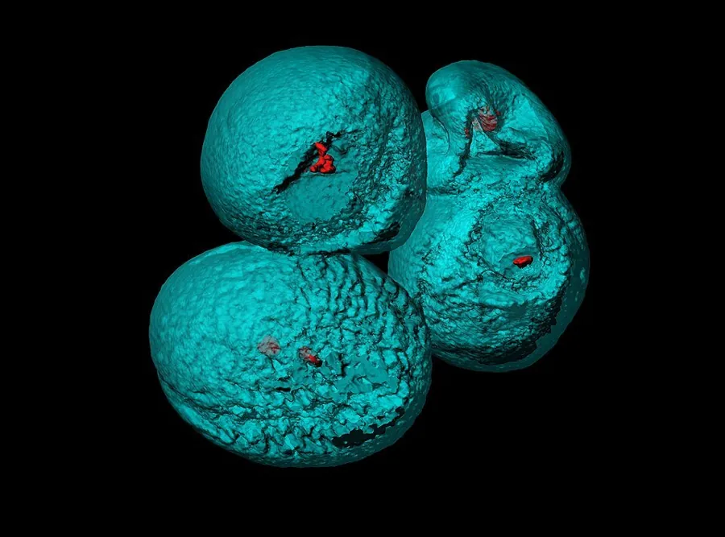
Аніонні канали SLAC, CLC, ALMT та модель гідратації пилку
SLAC1 · OST1 · AtClC-a · ALMT1/12 · MSL8
8.1Аніони: R- і S-струми
Плазмалема заряджена мінусом усередині (−120…−180 мВ), а аніони (Cl⁻, NO₃⁻, малат²⁻) накопичуються в цитоплазмі до мілімолярних концентрацій симпортом з H⁺. Тому електрохімічний градієнт для всіх аніонів спрямований назовні. Відкриття аніонних каналів одразу дає:
Клітина втрачає негативні заряди — відкриваються деполяризаційно-активовані вихідні K⁺-канали (GORK у замикаючих клітинах).
Аніони + K⁺ + вода залишають клітину — тургор падає, продихова щілина закривається.
У 1989–1992 рр. лабораторії Дж. Шредера і К. Рашке методом patch clamp знайшли в протопластах замикаючих клітин два типи аніонних струмів (Schroeder & Hagiwara, 1989; Linder & Raschke, 1992):
Струми при деполяризуючій сходинці: R-тип (ALMT12/QUAC1) вмикається за мілісекунди й інактивується; S-тип (SLAC1) повільний і тривалий.
8.2SLAC1 і закривання продихів
Як знайшли SLAC1: тепловізор
Двадцять років S-струм був «безіменним». Ген знайшли одночасно дві групи (Vahisalu et al., 2008; Negi et al., 2008). Відкриті продихи випаровують воду й охолоджують листок; при CO₂, посусі, озоні чи АБК продихи закриваються — і листок нагрівається. Інфрачервона камера виявила мутанти slac1, листки яких лишалися холодними: продихи не могли закритися. SLAC1-GFP — на плазмалемі замикаючих клітин; у slac1 повністю зник S-струм, а R-струм і Ca²⁺-струми лишилися.

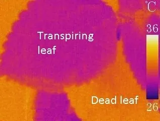

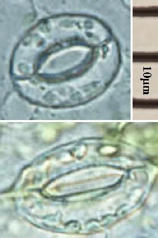
Гомотример; кожна субодиниця — 10 трансмембранних спіралей (5 пар шпильок), пора ~5 Å. У закритому стані прохід перекриває кільце Phe450; фосфорилювання N- і C-кінців повертає спіралі й відводить «заслінку» (Chen et al., 2010, за гомологом TehA).
SLAH2 і SLAH3 працюють і в коренях: завантаження NO₃⁻ і Cl⁻ у ксилему, деполяризація при гіпоосмотичному набуханні. Гомологи вивчають і на гігантських клітинах Chara.
Мережа сигналів, що відкриває SLAC1
Увімкніть один або кілька стимулів і подивіться, які ланки активуються. Червоні риски — гальмування.
Стимули
Мутанти
- Кальцій-незалежна гілка АБКБез стресу фосфатази PP2C (ABI1, ABI2, HAB1) тримають OST1 і SLAC1 дефосфорильованими. АБК + рецептори PYR/PYL/RCAR блокують ABI1 → вільна OST1 фосфорилює SLAC1 (Ser120).
- Кальцій-залежна гілкаCa²⁺ активує CPK6, CPK21, CPK23 і той самий модуль CBL1/9–CIPK23, що регулює AKT1 і NRT1.1; вони фосфорилюють SLAC1 і SLAH3 (напр., Ser59).
- CO₂ і бікарбонатβ-карбоангідрази βCA1/βCA4 перетворюють CO₂ на HCO₃⁻. Бікарбонат може діяти на трансмембранний домен SLAC1 (без N- чи C-кінця канал не реагує на АБК, але частково — на CO₂) і через RHC1 (або MPK4/MPK12) гальмує кіназу HT1 — негативний регулятор, що при низькому CO₂ тримає продихи відкритими. «Інгібування інгібітора» знімає блок з OST1/GHR1.
8.3Родина CLC і AtClC-a
Родина CLC є і в тварин, і в рослин (7 генів AtClC-a…g). У людини мутації CLC викликають тяжкі каналопатії:
У рослин усі CLC — на внутрішніх мембранах: AtClC-a, -b, -c, -g — тонопласт; AtClC-d, -f — Гольджі і TGN (разом з V-АТФазою регулюють pH люмена); AtClC-e — тилакоїди.
Patch clamp ізольованих вакуолей дикого типу і clca дав три відкриття:
- Не канал, а антипортерAtClC-a — вторинно-активний обмінник.
- Субстрат — нітратСелективність до NO₃⁻ значно вища, ніж до Cl⁻.
- Стехіометрія 2NO₃⁻ : 1H⁺Визначена за зсувом Erev при зміні нітрату й pH. Протонний градієнт V-АТФази і V-PPase «качає» два NO₃⁻ у вакуолю за один вихідний H⁺. Вакуоля запасає 50–90 % клітинного нітрату; у clca — удвічі менше.
Два CBS-домени на C-кінці зв'язують аденілові нуклеотиди: АТФ гальмує транспорт до 60 %, АМФ конкурує й знімає блок (De Angeli et al., 2009).
У замикаючих клітинах AtClC-a закачує NO₃⁻ у вакуолю при відкриванні продихів, а при дії АБК кіназа OST1 фосфорилює її N-кінець — і обмін змінюється на вихід аніонів з вакуолі; у clca реакція продихів на АБК порушена (Wege et al., 2014).
8.4Родина ALMT
Назва родини ALMT (14 генів) — від першого гена стійкості до алюмінію в пшениці (TaALMT1, Sasaki et al., 2004).
У кислих ґрунтах (pH < 5) алюмосилікати віддають токсичний Al³⁺, що зупиняє ріст коренів. AtALMT1 в епідермісі кореня активується позаклітинним Al³⁺ і викидає малат, який хелатує алюміній у ризосфері.
У замикаючих клітинах і мезофілі; ALMT9 активується цитозольним малатом і впускає малат і Cl⁻ у вакуолю при відкриванні продихів.
Плазмалема замикаючих клітин: швидкий потенціал-залежний канал для малату, сульфату, нітрату; активується OST1. У almt12 зникає R-струм, продихи погано закриваються на АБК, CO₂, темряву (Meyer et al., 2010).

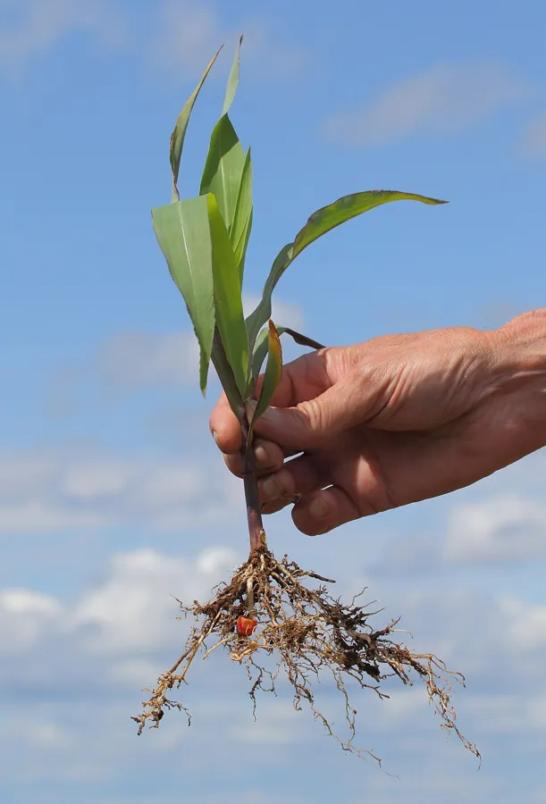
8.5Семінар: модель гідратації пилку
Феномен. Сухе видовжене пилкове зерно у воді стрімко набухає й округлюється. У дикого типу об'єм росте ~28 с і виходить на плато, розривається ~2 % зерен. У мутанта msl8 об'єм росте далі, а розривів — ~12 %. Класична гіпотеза: натяг мембрани відкриває MSL8, аніони виходять, тиск падає — зерно врятоване. Автори перевірили її моделюванням.
Чисельне розв'язання рівнянь 8.1–8.3 з модифікаціями. Порівняйте моделі з дикого типом, msl8 і надекспресором MSL8-YFP; PEG підвищує cout. Параметри умовні — важлива якісна поведінка.
- Модель 1 провалиласяНатяг мембрани в рази перевищував літичний поріг уже на перших секундах; дикий тип давав нереальний «горб» об'єму, а мутант не збігався з експериментом.
- Модифікація 1: складки мембрани ε₀У сухому зерні мембрана зібрана в складки — спершу розправляється без натягу. Розрахунковий натяг опустився нижче порогу розриву (перевірено пересушуванням пилку).
- Модифікація 2: нелінійна стінка pcЖорсткість стінки експоненційно зростає після критичного тиску. Мутант відтворено, але в дикого типу лишився «горб».
- Три моделі MSL8D — канал інактивується з часом: провалила тести з PEG і надекспресією. E — канал закривається, коли натяг починає спадати: пройшла всі тести. F — іони з MSL8 зміцнюють клітинну стінку: теж відповідає даним (а непровідний поро-мутант MSL8 показав, що сам іонний потік необхідний).
Критика на семінарі. у рівняння ввели багато невідомих (S₀, Lp, ε₀, pc, константи інактивації), підігнаних під одну криву (overfitting). Моделі E і F однаково добре описали всі перевірки (E навіть точніше на плато), прямих доказів зміцнення стінки аніонами немає — але в заголовку й анотації наголошено лише на F. Водночас, як підкреслила Т. М. Бібікова з посиланням на Д. Косгроува, саме механіка клітинної стінки зазвичай лімітує розширення клітини.
Транспортери нітратів і фосфатів та мембранні АТФази
NRT1.1 · NRT2.1 · PHT1 · AHA2 · ACA · V-АТФаза
9.1Нітрат і трансцептор NRT1.1
Головна форма азоту в аеробних ґрунтах — нітрат (NO₃⁻). Плазмалема заряджена негативно, а в клітині нітрату часто більше, ніж у ґрунті, тому поглинання — активний симпорт 2H⁺ : 1NO₃⁻ за рахунок протонно-рушійної сили H⁺-АТФази.
| Система | Діапазон [NO₃⁻] | Родина |
|---|---|---|
| LATS (низькоафінна) | > 0,5 мМ | NRT1 / PTR = NPF (53 гени в Arabidopsis, до 130 у вищих рослин) |
| HATS (високоафінна) | < 0,2–0,5 мМ | NRT2 (7 генів) у парі з білком NAR2.1 (NRT3.1) |
CHL1 / AtNRT1.1 / NPF6.3 — перший клонований еукаріотичний транспортер нітрату (І-Фан Цай і Дж. Шредер, Tsay et al., 1993). Мутант chl1 стійкий до гербіциду хлорату, бо не поглинає його разом з нітратом.
Змініть концентрацію нітрату або оберіть мутант: перемикач — фосфорилювання Thr101 кіназою CIPK23 (з CBL9).
Низький NO₃⁻: зайнятий лише високоафінний сайт, Thr101 доступний CIPK23 → фосфорильований мономер, Km ≈ 50 мкМ. Високий NO₃⁻: обидва сайти зайняті, кіназа не дістає → нефосфорильований димер, Km ≈ 4 мМ (Liu et al., 1999).
Первинна відповідь на нітрат — індукція NRT2.1 — зникає в chl1-5 (білка немає), але зберігається в chl1-9 (P492L: білок є, а транспорту немає). Отже, щоб «повідомити» про нітрат, переносити його не обов'язково (Ho et al., 2009). T101D дає слабку відповідь, T101A — надіндукцію.
NRT1.1 переносить ауксин; нітрат дозозалежно гальмує цей транспорт (але не навпаки). Без нітрату NRT1.1 відкачує ауксин з верхівки зачатка бічного кореня — корінь не росте в бідну зону; у зоні з нітратом ауксин накопичується, і бічний корінь росте (Krouk et al., 2010).
9.2NRT2 і пептидний сигнал CEP
У Arabidopsis 7 генів NRT2: поглинання з ґрунту — NRT2.1, 2.2, 2.4, 2.5; NRT2.7 — на тонопласті дозріваючого насіння. Як корінь у «голодній» зоні повідомляє решту рослини, що треба посилити поглинання? (Ohkubo et al., 2017; 2021)
Карта транспортерів нітрату в цілій рослині
| Етап | Транспортери |
|---|---|
| Поглинання з ґрунту | NRT2.1, NRT2.2, NRT2.4, NRT2.5 (високоафінні) · NRT1.1/NPF6.3 (дуальний) · NRT1.2/NPF4.6 (низькоафінний) |
| Виведення в ризосферу при стресі | NPF2.7 (NAXT1) |
| Ксилема: корінь → пагін | NRT1.5/NPF7.3 завантажує; NRT1.8/NPF7.2 і NRT1.9/NPF2.9 розвантажують і повертають у флоему (важливо при Cd і NaCl) |
| Ремобілізація і насіння | NRT1.7/NPF2.13 — флоема старих листків; NRT1.6/NPF2.12, NPF5.5, вакуолярний NRT2.7 — зародок |
9.3Фосфат і родина PHT
Фосфор рослини беруть лише як ортофосфат (Pᵢ: H₂PO₄⁻ / HPO₄²⁻). У ґрунті його 1–10 мкМ, у цитоплазмі — 5–10 мМ. Надлишок добрив виснажує запаси фосфоритів і спричиняє евтрофікацію водойм.

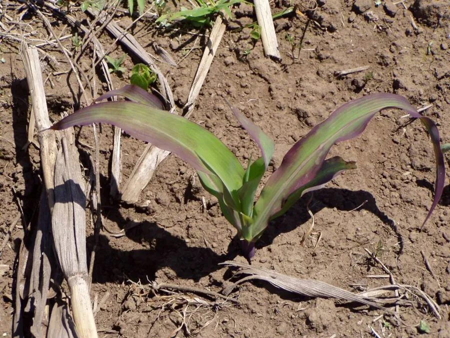

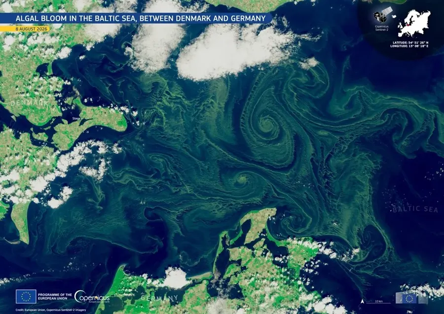
- Доказ H⁺/Pᵢ-симпортуДодавання Pᵢ до кореня: Pᵢ зникає з розчину, зовнішній pH росте, цитозоль тимчасово підкислюється, плазмалема деполяризується — електрогенний симпорт 2–4 H⁺ : 1 H₂PO₄⁻.
- Функціональна комплементація дріжджівШтам Δpho84 (без власного високоафінного транспортера) гине на низькому фосфаті. Бібліотека кДНК з коренів «голодного» Arabidopsis → трансформація → виживають лише колонії з робочим рослинним геном: так клоновано PHT1;1 і PHT1;4 (Muchhal et al., 1996).

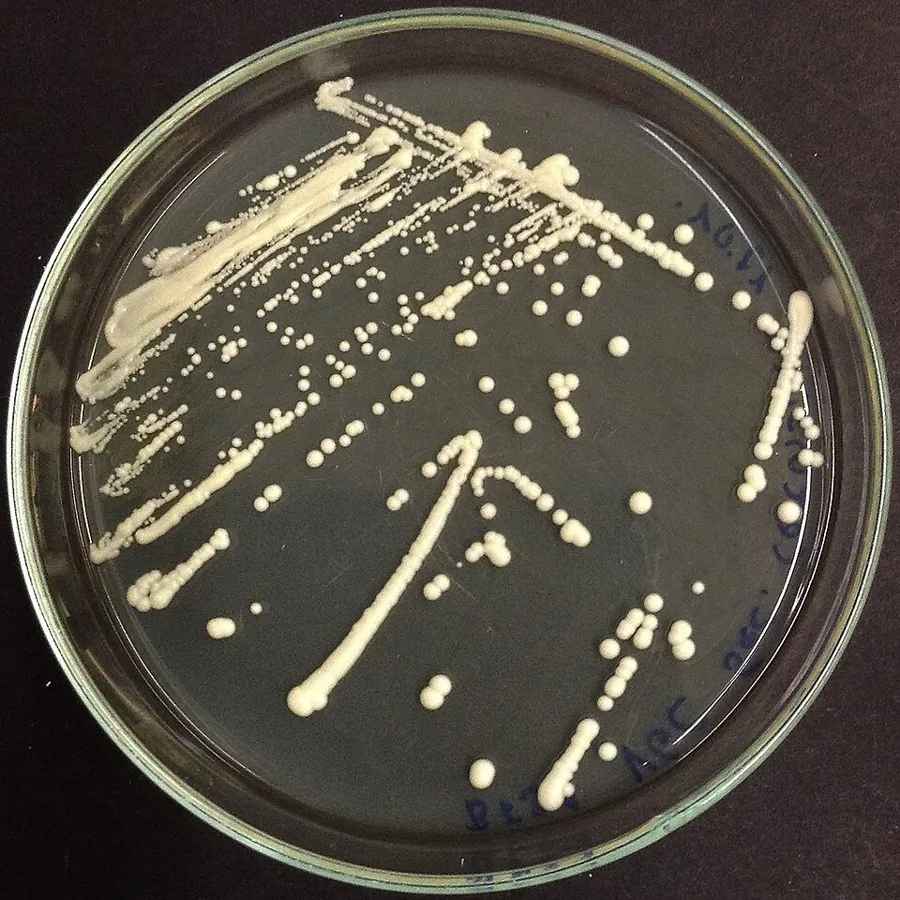
Плазмалема епідермісу й волосків. PHT1;1 і PHT1;4 — головні: pht1;1 −30 %, pht1;1;pht1;4 −60–70 % поглинання.
Внутрішня оболонка хлоропласта, H⁺/Pᵢ-симпорт.
Внутрішня мембрана мітохондрій — Pᵢ для синтезу АТФ.
Хлоропласти, нефотосинтезуючі пластиди, Гольджі (H⁺- або Na⁺-залежні).
Тонопласт, SPX-домен: надлишок фосфату — у вакуолю.
Гольджі/TGN клітин стели: завантаження Pᵢ у ксилему. Немає активності в дріжджах чи ооцитах — але це не доказ, що білок не транспортер: в рослині можуть бути потрібні кофактори.
П'ять рівнів регуляції PHT1
Надлишок фосфату (і арсенату AsO₄³⁻, що проходить тими самими транспортерами) небезпечний, а транспорт дорогий — тому PHT1 контролюють від хроматину до виходу з ЕР.
9.4Помпи: AHA2, ACA, V-АТФаза
Активний транспорт усіх розглянутих іонів спирається на три родини АТФаз: P-типу (ковалентний фосфорильований інтермедіат), V-типу (роторні вакуолярні помпи) і F-типу (АТФ-синтази мітохондрій і хлоропластів).
H⁺-АТФаза плазмалеми AHA2
У рослин замість Na⁺/K⁺-АТФази головна помпа — H⁺-АТФаза підродини PIIIA (AHA1–AHA11, домінують AHA1 і AHA2), незворотно гальмується ортованадатом. Кристалічна структура AHA2 (Pedersen et al., 2007): мембранний домен M1–M10 (протон зв'язує Asp684, Asn106 — «заслінка» проти зворотного потоку), цитоплазматичні N (АТФ), P (фосфорилюється Asp329) і A (дефосфорилювання і «поршень»), і автоінгібіторний C-кінцевий R-домен.
Увімкніть сигнали: яскраві сайти фосфорильовані. Активність визначає комбінація сайтів.
| Сайт | Ефект | Хто і коли |
|---|---|---|
| Thr947 | активація: сайт для 14-3-3, що знімає автоінгібування | синє світло (фототропіни → BLUS1 → BHP); ауксин (SAUR гальмують фосфатазу PP2C.D — «кислий ріст»); брасиностероїди, сахароза |
| Thr881 | активація | рецепторні кінази, напр. PSY1R на пептид PSY1 |
| Ser899 | гальмування, залужнення апопласту | пептид RALF + рецептор FERONIA — зупиняє ріст (імунітет, запліднення) |
| Ser931 | гальмування: 14-3-3 не сідає навіть при P-Thr947 | кіназа PKS5 (CIPK11) при лужному стресі й високому Ca²⁺ (Fuglsang et al., 2007) |
Ca²⁺-АТФази ACA
Ca²⁺–CaM сідає на N-кінець ACA і знімає автоінгібування (CDPK додатково фосфорилюють Ser22). Саме швидкість вмикання й відкачування ACA задає гостроту і частоту кальцієвих піків. AtACA9 на плазмалемі пилкових трубок потрібна для верхівкових осциляцій Ca²⁺, росту трубки і запліднення (Schiøtt et al., 2004).
V-АТФаза

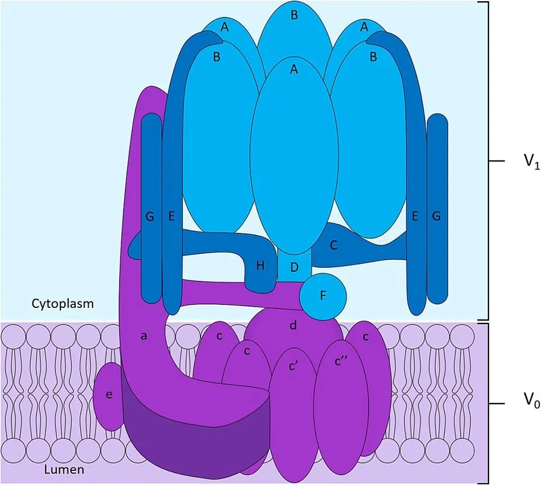

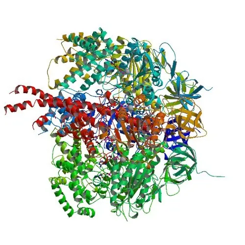
Редокс-регуляція: H₂O₂, NO, малеїмід і окиснений глутатіон гальмують V-АТФазу (як і H⁺-АТФазу плазмалеми), окиснюючи чи нітрозилюючи цистеїни субодиниці A; відновники і H₂S повертають активність.
Покажчик білків і сигнальних модулів
Абетковий перелік: назва → що це → розділ конспекту.
Контрольні питання
Чому чистий ліпідний бішар непроникний для іонів?
Чим потенціал спокою рослинної клітини відрізняється від тваринної?
Обчисліть EK при [K⁺]in = 140 мМ і [K⁺]out = 4 мМ (21 °C).
Чому Erev не змінюється від активатора чи інгібітора каналу?
Чому K⁺-канал пропускає K⁺, але не менший Na⁺?
Назвіть чотири конфігурації patch clamp і для чого кожна зручна.
Навіщо для дослідження H⁺-АТФази потрібні везикули inside-out?
Чому вхідні K⁺-канали рослин відкриваються гіперполяризацією?
Як комплекс CBL1/9–CIPK23 активує AKT1?
Чому мутант hkt1 чутливіший до засолення, ніж дикий тип?
Яку роль відіграють TPK3 і KEA3 у тилакоїдах?
Що таке кальцієва сигнатура і чому важливе видалення Ca²⁺?
Як працює FRET-сенсор Yellow Cameleon?
Як поширюється системна хвиля Ca²⁺ при засоленні кореня?
Як довели, що MCA1 відкривається натягом ліпідів?
Які три гілки сигналів відкривають SLAC1?
Чим AtClC-a відрізняється від класичного хлоридного каналу?
Чому NRT1.1 називають трансцептором?
Назвіть п'ять рівнів регуляції PHT1.
Як ауксин активує H⁺-АТФазу AHA2?
Джерела
- Doyle D. A. et al. (1998). The structure of the potassium channel: molecular basis of K⁺ conduction and selectivity. Science, 280(5360), 69–77. PubMed
- Hedrich R., Neher E. (1987). Cytoplasmic calcium regulates voltage-dependent ion channels in plant vacuoles. Nature, 329, 833–836. Nature
- Larsson C., Sommarin M., Widell S. (1994). Isolation of highly purified plant plasma membranes and separation of inside-out and right-side-out vesicles. Methods in Enzymology, 228, 451–469. ScienceDirect
- Fuglsang A. T. et al. (2007). Arabidopsis protein kinase PKS5 inhibits the plasma membrane H⁺-ATPase by preventing interaction with 14-3-3 protein. The Plant Cell, 19(5), 1617–1634. PubMed
- Xu J. et al. (2006). A protein kinase, interacting with two calcineurin B-like proteins, regulates K⁺ transporter AKT1 in Arabidopsis. Cell, 125(7), 1347–1360. PubMed
- Li L. et al. (2006). A Ca²⁺ signaling pathway regulates a K⁺ channel for low-K response in Arabidopsis. PNAS, 103(33), 12625–12630. PNAS
- Held K. et al. (2011). Calcium-dependent modulation and plasma membrane targeting of the AKT2 potassium channel by the CBL4/CIPK6 calcium sensor/protein kinase complex. Cell Research / PNAS. PNAS
- Xia J. et al. (2014). Nitric oxide negatively regulates AKT1-mediated potassium uptake through modulating vitamin B6 homeostasis in Arabidopsis. PNAS, 111(45), 16196–16201. PubMed
- Gobert A. et al. (2007). The two-pore channel TPK1 gene encodes the vacuolar K⁺ conductance and plays a role in K⁺ homeostasis. PNAS, 104(25), 10726–10731. PMC
- Carraretto L. et al. (2013). A thylakoid-located two-pore K⁺ channel controls photosynthetic light utilization in plants. Science, 342(6154), 114–118. Science
- Berthomieu P. et al. (2003). Functional analysis of AtHKT1 in Arabidopsis shows that Na⁺ recirculation by phloem is crucial for salt tolerance. The EMBO Journal, 22(9), 2004–2014. PMC
- Horie T. et al. (2001). Two types of HKT transporters with different properties of Na⁺ and K⁺ transport in Oryza sativa. The Plant Journal, 27(2), 129–138. PMC
- Ali Z. et al. (2012). TsHKT1;2, a HKT1 homolog from the extremophile Arabidopsis relative Thellungiella salsuginea, shows K⁺ specificity in the presence of NaCl. Plant Physiology, 158(3), 1463–1474. PMC
- Ali A. et al. (2016). A single amino-acid substitution in the sodium transporter HKT1 associated with plant salt tolerance. Plant Physiology, 171(3), 2112–2126. PMC
- Ragel P. et al. (2015). The CBL-interacting protein kinase CIPK23 regulates HAK5-mediated high-affinity K⁺ uptake in Arabidopsis roots. Plant Physiology, 169(4), 2863–2873. PMC
- Rigas S. et al. (2001). TRH1 encodes a potassium transporter required for tip growth in Arabidopsis root hairs. The Plant Cell, 13(1), 139–151. PMC
- Vicente-Agullo F. et al. (2004). Potassium carrier TRH1 is required for auxin transport in Arabidopsis roots. The Plant Journal, 40(4), 523–535. PubMed
- Zhang M. L. et al. (2020). KUP9 maintains root meristem activity by regulating K⁺ and auxin homeostasis in response to low K. EMBO Reports, 21(6), e50164. PubMed
- Al-Younis I. et al. (2018). The Arabidopsis thaliana K⁺-uptake permease 5 (AtKUP5) contains a functional cytosolic adenylate cyclase essential for K⁺ transport. Frontiers in Plant Science, 9, 1645. PMC
- Kunz H. H. et al. (2014). Plastidial transporters KEA1, -2, and -3 are essential for chloroplast osmoregulation, integrity, and pH regulation in Arabidopsis. PNAS, 111(20), 7480–7485. PMC
- Li J. et al. (2023). Phosphatidic acid–regulated SOS2 controls sodium and potassium homeostasis in Arabidopsis under salt stress. The EMBO Journal, 42(8), e112401. PMC
- Shih H. W. et al. (2015). The cyclic nucleotide-gated channel CNGC14 regulates root gravitropism in Arabidopsis thaliana. Current Biology, 25(23), 3119–3125. PMC
- Ortiz-Ramírez C. et al. (2017). GLUTAMATE RECEPTOR-LIKE channels are essential for chemotaxis and reproduction in mosses. Nature, 549(7670), 91–95. PubMed
- Toyota M. et al. (2018). Glutamate triggers long-distance, calcium-based plant defense signaling. Science, 361(6407), 1112–1115. PubMed
- Peiter E. et al. (2005). The vacuolar Ca²⁺-activated channel TPC1 regulates germination and stomatal movement. Nature, 434(7031), 404–408. PubMed
- Choi W. G. et al. (2014). Salt stress-induced Ca²⁺ waves are associated with rapid, long-distance root-to-shoot signaling in plants. PNAS, 111(17), 6497–6502. PubMed
- Hamant O. et al. (2008). Developmental patterning by mechanical signals in Arabidopsis. Science, 322(5908), 1650–1655. Science
- Veley K. M. et al. (2014). Arabidopsis MSL10 has a regulated cell death signaling activity that is separable from its mechanosensitive ion channel activity. The Plant Cell, 26(7), 3115–3131. PMC
- Nakagawa Y. et al. (2007). Arabidopsis plasma membrane protein crucial for Ca²⁺ influx and touch sensing in roots. PNAS, 104(9), 3639–3644. PMC
- Nakano M. et al. (2011). Membrane tension induces stretch-activated Ca²⁺ channel activity in Arabidopsis MCA1 synthesized in cell-free system. PLOS ONE / Journal of Biological Chemistry. PMC
- Yuan F. et al. (2014). OSCA1 mediates osmotic-stress-evoked Ca²⁺ increases vital for osmosensing in Arabidopsis. Nature, 514(7522), 367–371. PubMed
- Thor K. et al. (2020). The calcium-permeable channel OSCA1.3 regulates plant stomatal immunity. Nature, 585(7826), 569–573. PMC
- Mousavi S. A. R. et al. (2021). PIEZO ion channel is required for root mechanotransduction in Arabidopsis thaliana. PNAS, 118(20), e2102188118. PubMed
- Ruan H. et al. (2023). Periodic delivery of AtFH5-decorated vesicles carrying CNGC18 drives oscillatory Ca²⁺ and stepwise exocytosis during pollen germination. (Cited in review on transmembrane formins in membrane trafficking). Journal of Experimental Botany
- Schroeder J. I., Hagiwara S. (1989). Cytosolic calcium regulates ion channels in the plasma membrane of Vicia faba guard cells. Nature, 338, 427–430. Nature
- Linder B., Raschke K. (1992). A slow anion channel in guard cells, activating at large hyperpolarization, may be principal for stomatal closing. FEBS Letters, 313(1), 27–30. ScienceDirect
- Vahisalu T. et al. (2008). SLAC1 is required for plant guard cell S-type anion channel function in stomatal signalling. Nature, 452(7186), 487–491. PubMed
- Negi J. et al. (2008). CO₂ regulator SLAC1 and its homologues are essential for anion homeostasis in plant cells. Nature, 452(7186), 483–486. PubMed
- Chen Y. H. et al. (2010). Homologue structure of the SLAC1 anion channel for closing stomata in leaves. Nature, 467(7319), 1074–1080. PMC
- De Angeli A. et al. (2006). The nitrate/proton antiporter AtCLCa mediates nitrate accumulation in plant vacuoles. Nature, 442(7105), 939–942. ResearchGate
- De Angeli A. et al. (2009). ATP binding to the C terminus of the Arabidopsis thaliana nitrate/proton antiporter, AtCLCa, regulates nitrate transport into plant vacuoles. The Plant Cell, 21(1), 170–184. PMC
- Wege S. et al. (2014). Phosphorylation of the vacuolar anion exchanger AtCLCa is required for the stomatal response to abscisic acid. Science Signaling, 7(333), ra65. PMC
- Sasaki T. et al. (2004). A wheat gene encoding an aluminum-activated malate transporter. The Plant Journal, 37(5), 645–653. PubMed
- Meyer S. et al. (2010). AtALMT12 represents an R-type anion channel required for stomatal movement in Arabidopsis guard cells. The Plant Journal, 63(6), 1054–1062. PMC
- Baird M. A. et al. (2022). In vitro experiments and kinetic models of Arabidopsis pollen hydration mechanics show that MSL8 is not a simple tension-gated osmoregulator. Current Biology, 32(13), 2921–2934. PubMed
- Tsay Y. F. et al. (1993). The herbicide sensitivity gene CHL1 of Arabidopsis encodes a nitrate-inducible nitrate transporter. Cell, 72(5), 705–713. PubMed
- Liu K. H., Huang C. Y., Tsay Y. F. (1999). CHL1 is a dual-affinity nitrate transporter of Arabidopsis involved in multiple phases of nitrate uptake. The Plant Cell, 11(5), 865–874. PMC
- Ho C. H. et al. (2009). CHL1 functions as a nitrate sensor in plants. Cell, 138(6), 1184–1194. Plant Cell Reference
- Krouk G. et al. (2010). Nitrate-regulated auxin transport by NRT1.1 defines a mechanism for nutrient sensing in plants. Developmental Cell, 18(6), 927–937. PubMed
- Ohkubo Y. et al. (2017). Shoot-to-root mobile polypeptides involved in systemic regulation of nitrogen acquisition. Nature Plants, 3, 17029. PubMed
- Ohkubo Y. et al. (2021). Type 2C protein phosphatase-mediated dephosphorylation of NRT2.1 activates high-affinity nitrate uptake in roots. Nature Plants, 7(7), 903–910. PMC
- Muchhal U. S., Pardo J. M., Raghothama K. G. (1996). Phosphate transporters from the higher plant Arabidopsis thaliana. PNAS, 93(19), 10519–10523. PMC
- Pedersen B. P. et al. (2007). Crystal structure of the plasma membrane proton pump. Nature, 450(7172), 1111–1114. PMC
- Schiøtt M. et al. (2004). A plant plasma membrane Ca²⁺ pump is required for normal pollen tube growth and fertilization. PNAS, 101(25), 9502–9507. PMC